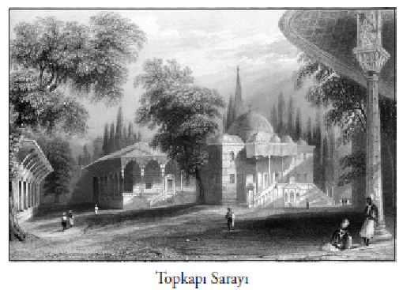

Bunlar, maalesef filolojik bakımdan donanımsız, boş konuşmayı seven bir memleketin tarih yazımının hazin görüntüsüdür. Osmanlı İmparatorluğu’nu aşağı yukarı 150’nci yahut 140’ıncı kuruluş yıldönümüne kadarki vesikalardan etüt etmekten aciziz. En eski tahrir defterimiz ve en eski kadı sicillerimiz de gene 15’inci asrın 2’nci yarısına aittir. Daha da tuhaf olanı, en eski tahrir defterimiz, bugünkü Türkiye’ye değil, Arnavutluk’a aittir, yani Fatih Sultan Mehmet devrine. Bunu Halil Hoca neşretmiştir, Halil Hoca’nın böylece Arnavutluk’un milli tarihine yaptığı katkı eşsizdir.
Neticede kendi kaynaklarınız bu kadar, yabancı kaynakların hiçbirini de doğru dürüst etüt etmiş değiliz. Buna maalesef yabancı kolleglerimiz de dâhil. Birkaç meslektaşımız var gerçi; ama bunlar maalesef o eski, kuvvetli ananenin sahibi olacak kişiler değil. Artık ne eski Menage var, ne eski Hammer. Yeni bir nesil yetişti, bunlar belki yapacak çok şey bulamıyorlar, belki de tıkandılar. Zamanımızın Avrupa münevveri de maalesef iyi yetişmiyor. Eski kuşağı, İkinci Cihan Harbi’nden evvelkileri hatırlıyorum, mesela bizim hocalarımızdan biri daha liseyi bitirdiği zaman, Almanca ve Fransızcanın yanında Yunanca ve Latinceyi de tam biliyordu. Hatta daha dinî ağırlıklı liselerde yetişen bazıları İbranca da öğreniyordu. O nesilde filolojik meleke çok gelişmişti. Bir kelimenin oturmadığını, yanlış anlaşıldığını anladıkları an rahatsız oluyorlardı. Latince, Yunanca, ya da başka dilden metinleri çocukluktan bu yana okuya okuya o kadar rafine, o kadar iyi donanımlılardı. Hiyeroglifleri bulan Champollion, 15-16 yaşındayken Yunanca ve Latincenin dışında Aramca ve İbranca gibi dilleri biliyordu. Biliyordu ki üzerinde üç ayrı dili taşıyan “Rosetta taşındaki” Kobtça metni okudu. Yunanca çevirisinden hareket edip hiyeroglifi çözdü. 40 küsur yaşlık bir ömre sığdırdı bütün bunları. Daha maceraperest insanlardan biri, mesela ünlü Arabistanlı Lawrence, Hitit dönemi kazıları, Arab edebiyatı bilgisi gibi dallar yanında İngilizcedeki en iyi Iliada ve Odiseus çevirisini yapmıştır.
Neticede bugün Osmanlı tarihçiliği maalesef Şark’ın diğer dallarına göre çok büyük talihsizlik içindedir. Hem memleketin kendi evlatları, hem de onunla uğraşması gereken yabancılar fazla bir katkı sağlamamakta, bu devrin tarihi adına kayda değer adımlar atılmamaktadır.
Göz önüne getirmeyi ihmal ettiğimiz, hatta tasavvur etmekte zorlandığımız çok mühim bir nokta vardır. Bu da Anadolu’nun, XI. asırda Malazgirt’te, İmparator Romanus Diogenes’le yapılan meydan muharebesi sonunda Türkleşmeye başlamasıdır. Daha önce Peçenekler gibi Hıristiyan-Türk kavimler Anadolu’ya yerleşmiştir ve Danişmendli akınları vardır ama bunlar esasa girmez. Anadolu’da Malazgirt’ten önce de bazı Türk akınları olduğu anlaşılıyor, nitekim 1071 bir kesin tarih olmaktan çok, bu olayın adının konduğu bir zirvedir. Demek ki Anadolu, esas itibariyle XI. asır sonlarından itibaren ve XII. asır boyunca Türkleşmiştir. Tabii ki bu konuda kesin tarihler tespit etmek çok zor. Kesin bir şey var ki, biz bazı kaynakları kullanamıyoruz. Türkiye tarihçiliğine ilişkin Gürcü, Ermeni, Bizans, İran ve o asırların İtalyan kaynaklarını, özellikle de Papalık arşivini bilmiyoruz...
Papalığın arşivleri dedik; 1135’ten beri çok düzenli ve zengin bir şekilde tutulmaktadır. Üstelik bu tarihin öncesine dair bölümler ve parçalar da vardır. Bütün bu kaynakların hepsini incelemek, bir arada değerlendirmek, maalesef Türk tarihçiliğinin iktidarı dâhilinde olmamıştır. Hiç unutmayalım ki, bu kaynakların bundan sonra tarihçiliğimize dâhil olmaması için bir sebep yoktur. Yeter ki tarih eğitimimizi ve düşüncemizi buna göre ayarlayalım. Aslında birçok milletin tarihi için yakın Ortaçağ yahut geç Ortaçağ dediğimiz bu dönem, Türkiye’de ancak spekülasyonlarla değerlendirme konusu yapılmaktadır. Türkiye halkı ve aydınları hâlâ bu konuyu, “Anadolu’ya bir milyonla mı, yoksa üç milyonla mı geldik? Burası ne derece Türkleşti?” gibi abes yorum ve münakaşalarla ele almaktadır.
Şu gerçeği unutmayalım: XI-XII. asırlar, dünya tarihi ve artık bizim de içinde bulunduğumuz Akdeniz ve Avrupa tarihi için geç devirlerdir. Dolayısıyla Türk vatanının kurulması, Anadolu’nun Türkleştirilmesi oldukça geç bir tarihtir. Bizim gibi vatanını coğrafî göçlerle kuran milletler, anayurtlarının biçimlenmesini ve tarihî kimliklerinin ortaya çıkarılmasını o tarihlerde çoktan tamamlamışlardır. Mesela Fransa o tarihte artık dört asırlık millî ve muasır bir coğrafyanın temelini oluşturmuş sayılabilir. En azından Fransa’yı oluşturan ana unsurlar şekillenmiştir. Almanya ve İspanya için de aynı durum söz konusudur. Gerçi İspanya toprakları VIII. asırda Müslüman Arapların ve Berberilerin eline geçmiştir ama yine de İspanyol halkı ve kimliği bir yere gitmemiş, kaybolmamış, oralarda kalmıştır. Ve bugün İspanya, tarihî gelişimini tamamlamaktadır. Özellikle ülkenin kuzeyi için bu net bir şeydir. Mesela Katalunya, Katalunya olarak biçimlenmiştir ve öyle de devam etmektedir.
Böyle bir gerçeklikte Türklerin tarihî kayıtlarının noksan olması, değerlendirilmemesi söz konusu değildir. Bütün mesele bu kaynakların kullanılması ve değerlendirilmesidir. Türkiye bunu yapamıyorsa, bunun sebebi, nesillerimizin tarih şuurunun eksik olmasıdır. Evet, Türkiye, bir göçle, bir fetihle, sonradan yerleşmeyle vatanını en geç kuran ülkelerin içindedir. Bu bir gerçektir.
Küçük Asya
Anatolia, bilindiği gibi Yunancada “doğu” anlamına gelir. Küçük Asya da, yine Yunanlıların tabiriyle Büyük Asya’nın bir uzantısı manasındadır. Bizse buraya geldiğimizde, bu topraklara ‘Roma ülkesi’ dedik, ‘Roma ülkesi’, etnik bir adlandırma değildir. Zaman içinde Diyar-ı Rum’a ‘Anadolu’ dedik. Ama buraları daha çok Diyar-ı Rum olarak kaldı. Balkanlar’a geçtikten sonra, bu sefer Balkanlar’a ‘Rumeli’ dedik. Hiç şüphesiz bu da etnik bir tanımlama değildi, Roma ülkesi anlamına gelen bir isimlendirmeydi. ‘Balkan’ ismi de Türklerin bıraktığı bir coğrafî tabirdir. Bugün bu ismi kaldırmaya çalışıp Balkanlar’a ‘Güneydoğu Avrupa’ diyorlar. Güneydoğu, ama kime göre güneydoğu? Tabii ki Almanya’ya ve Fransa’ya göre. Bize göre niye Güneydoğu Avrupa olsun ki?
XII. asırda insanlar bizim yurdumuza artık Türkiye demektedirler. İtalyan kaynaklarında bunu görüyoruz. Artık kırsal bölgelerin Türkmen göçebeler ve köylüler, şehirlerin ise büyük bir Türk nüfus tarafından doldurulduğu anlaşılıyor. Türkler batıya doğru ilerlemekte, Bizans İmparatorluğu ise artık gerilemektedir. Bilhassa Malazgirt’ten sonra Miryokefalon Savaşı, bu tarihî oluşumun nihaî noktasıdır. XII. asrın sonunda başlayan ve ilk önce Anadolu’dan geçen Haçlı Seferleri dahi bu tarihî hareketliliği ve oluşumu önleyememiştir. Haçlı Seferleri kısa bir müddet sonra güneye kaymış, dördüncüsü 1204’te İstanbul’un istilasıyla yetinmiştir.
Görülmektedir ki Anadolu’nun bu yeni etnik oluşumu, tarihî seyrine devam etmektedir XIV. yüzyılın ikinci yarısından itibaren bugünkü Trakya bölgemiz, kuzey Yunanistan, güney Bulgaristan, doğu Sırbistan, Türk devlet idaresi olan Osmanlı’ya katılacaktır. İşte buradan itibaren Avrupa’daki Türkiye diye bir tarihî mesele ortaya çıkmıştır ve bugün de devam etmektedir.
Avrupa’daki Türkiye
Avrupa’daki Türkiye’ye dair düşünce, tavır ve tutumlar zıt nitelikler göstermektedir. Konuya hayırhah bir şekilde bakanlar olduğu gibi, nötr bakmaya çalışanlar ve halen XIII-XIV. yüzyıldaki kilise ve idare çevrelerinin bakışını paylaşanlar da vardır. ‘Avrupa’daki Türkiye’ konusu, öyle kolay halledilebilecek bir sorun değildir. Bu konuda içine kapanık, kendine dönük bir kötümserliğe gerek olmadığı gibi safdil bir iyimserliğe de gerek yoktur. Vakıaları olduğu gibi kabul etmeliyiz. Zira coğrafya, itaat edilmesi gereken büyük bir gerçektir.
Anadolu kıtasının Türkleşmesi, Türkiye olması nasıl artık tartışılmıyorsa Balkanlar’ın da tartışılmaması gerekir. Balkanlar’daki nüfusun bu dönemden sonra oralardan sürülmesi, yerlerinden edilmesi mümkün görünmemektedir. En son Todor Jivkov döneminde, Bulgaristan Halk Cumhuriyeti 300 bin Türk’ü bir anda sınırlarının dışına atmış; Edirne’de sınır kapısının önüne yığarak, ‘Gelin, halkınızı alın’ demiştir. Nitekim aldık da. İlk önce bazı sıkıntılar çekilse de Türkiye’nin dinamik sınaî ve kentsel yapısı; bu Osmanlı tebaası Türkleri çok çabuk içine alabildi. Aslında buna ihtiyacımız da vardı. Hastanelerimiz oradan gelen sağlık personeline, dükkânlarımız oradan gelen zanaatkâra, sanayimiz oradan gelen ustalara ve teknisyenlere muhtaçtı. Zira değişen bir yapı vardı; 1940’lar, 50’ler Türkiyesi’nin değişen, patlama gösteren tarımsal yapısı, tarım yapan insanlara ihtiyaç duymuş ve Türkiye, sayısı 100-200 binle ifade edilen Balkan göçmenini bağrına basabilmişti. Şüphesiz ki bu tür dalgalar büyük sıkıntı yaratır. Ancak bugün tarihçi gözüyle baktığımızda, Türkiye’nin bu gibi göçleri birçok ülkeye göre daha ustalıkla karşıladığını söyleyebiliriz.
Evet, Avrupa’daki Türkiye’nin oluşumu bitmiştir. XIX. yüzyılın sonlarında sınırlar artık tespit edilmiştir. Bu tarihten itibaren Osmanlı İmparatorluğu, Avrupa’daki topraklarını geri vermiştir. Kuruluşundan iki yüzyıl sonra Macaristan’a, Tuna’ya yerleşen bir imparatorluk, bu tarihi takip eden 2-3 asır içinde bu toprakları kaybetmiştir. Ama şu da bir gerçektir ki; dört asrı, bazı yerlerde ise beş, beş buçuk asrı bulan Osmanlı hâkimiyeti, Avrupa kıtasının orta ve güneydoğu kısımlarına, hatta kuzeye doğru gelişen bölümlerine damgasını vurmuştur.
Balkanların her köşesinde Osmanlı izleriyle karşılaşmanız mümkündür. Mesela Bulgaristan bölgesine baktığınızda Mithat Paşa gibi büyük bir valinin varlığını ve icraatını anlarsınız. Bunlar, Bizans denen Doğu Roma’dan sonra Balkanların tekrar bir imparatorluk, bir siyasî-askerî birlik halinde bütünleştiğini gösteren delillerdir. Doğru, Osmanlı, askerî bir imparatorluktur. Ama askerî amaçlarla kurduğu tesisler, iktisadî anlamda da önemli olmuştur. Çünkü imparatorluk askerî gelişmeleri ve yeni teknikleri anında uyarlamak zorundaydı, zira yaşamı buna bağlıydı. Bunları uyarlayabildiği için de, Yeniçağ imparatorluklarına ve dünya şartlarına uyum sağlayan bir eski imparatorluk düzeni kurabilmiştir. XX. yüzyılda demiryolundan ve modern eğitimden istifade edebilmiş, mühendisliği ve tıbbı kendine göre geliştirmiş; bu sayede XXI. yüzyıla hazırlanabilmiştir.
Osmanlı İmparator-luğu’nun temel unsuru Türklerdir, dili Türkçedir, ordusu Türk dilini kullanmayı ve bu karakteri benimsemeyi sürdürmüştür. Devşirme dediğimiz sistemle ordunun sadece çekirdek kısmına asker temin edilmiştir. Bürokrasi için de aynı durum geçerlidir.
Türk tarihçiler, insanların devşirme usulüyle Türkleştirilmesindeki sürat ve yoğunluğu incelemiş değildir. Bunu daha çok yabancı tarihçiler ve Balkanlılar incelemiştir. Sırplı tarihçi Radovan Samarcic’in ifade ettiği gibi; uzak dağlardan, ücra köylerden toplanan bu Hıristiyan çocuklar, çocukluklarında kendilerine öğretilmiş bazı dua, deyim ve atasözlerinin kalıntılarını hep taşımışlardır. Çocukluklarından getirdikleri bu izler, sonradan öğrendikleri dil içinde farklı bir renk olarak bulunmuştur. Türk evlerine verilerek kendilerine din ve dil öğretilmiş, acemioğlan olarak yetiştirilmişlerdir. Yönetici olup üst sınıfı teşkil etmek üzere alınanlar ise, Enderun mektebinde, imparatorluğun kültürüne ve ideolojisine göre yetiştirilmişlerdir.
Var Olanın Üzerine İnşa
Osmanlı İmparatorluğu’nun Batı’daki ilerlemesi üç safhada olmuştur. Birinci safhada bugünkü anavatanımız kurulmuştur. Bu aşamada, hem Türklerin etnik bakımdan yerleşmesi, hem de nüfusun dinî müessese ve tasavvufî hareketlerle İslamlaştırılması ve Türkleştirilmesi söz konusudur. Asıl önemlisi, memleketin alt yapısı, İran kıtası ile bağlantıyı sağlayacak şekilde hazırlanmıştır. İşte muhteşem kervansaraylar ve ticaret yolu! İşte Eski Roma sistemini kullanan ama yenisini de geliştiren bir su sevk ve dağıtım sistemi! Doğrudur, kentler bir restorasyona dayanmaktadır. Mesela Karaman’daki Ermenek, Bursa’daki Yenişehir gibi bir iki belirgin merkez dışında tamamen yeni kurulmuş bir yapı yoktur, buna gerek de yoktur. Çünkü coğrafya, yeni gelenin eskilerden öğrenmesi gereken bir bilgidir. Şehrin, coğrafyanın neresinde ve nasıl kurulacağını eskiler çok daha iyi bilirler. Mühim olan; bin, iki bin, üç bin yıldır var olan yerleşim merkezlerine intibak etmeyi bilmektir. Yine şehirlerin suyu, iaşesi, yollarının emniyeti, yol güzergâhlarının tespiti bakımından da eski kuruluşlara, eski alt yapıya itaat etmeyi bilmek, onu kollamak, sadece zarafet açısından değil teknik olarak da ehemmiyet arz eden bir şeydir. Bu durum, Anadolu’daki şehirleşmede ve yerleşmede en mühim unsur olmuştur.
Türklerin Avrupa’daki hâkimiyetinin çözülüşü açısından, hiç şüphesiz ki II. Viyana Kuşatması sonrası dönem, önemli bir başlangıç noktasıdır. Hıristiyanların çoğunluk olduğu vilayetlerin kaybından sonra; 1774’ten, 1783’ten itibaren imparatorluğun Müslüman ve Türk eyaletlerinin de kaybıyla, bu çözülüş yeni bir safhaya girmiştir. Hayatımız, idarî ıslahat anlayışımız, var oluş kavgamız başka bir safhada seyretmiştir. Nihayet XIX. yüzyılın sonundan itibaren, bilhassa Rumeli’deki vatan topraklarının kaybıyla, Türk İmparatorluğu’nun parçalanması süreci başlamış, bu durum gittikçe belirginleşmiştir. Bunların üzerinde ayrıca durmak gerekiyor. Zira bugünkü Türkiye’nin yaşadığı problemleri anlamak, o dönemi bilmekle ilgilidir.
İnsanlık tarihinde Haçlı Seferleri hiç şüphesiz çok önemlidir. Önemi, bazen çarpıtılan yorumlara konu olmasından da ileri gelir. Çok uzun bir zaman Haçlılık, Avrupa’nın iktisadî ve kültürel yayılmasının bir tezahürü olarak gösterilmiştir. Kimi çevrelerde ise, tamamen karanlık bir girişim olarak okunur. İslam dünyasında da hiçbir zaman hamasetin ötesinde incelenmiş bir konu değildir. Mesela bu konuda Arap ve Türk kaynakları ne diyor? Doğrusu, ikinci grup çok şey söylemiyor. Acaba Bizans kaynakları ne diyor? Son zamanlarda bu kaynaklar merakla okunmaya başlanmıştır.
Haçlı Seferleri’nin amacı hiç şüphesiz İslam dünyasıdır. Maksat, Kudüs’ü ‘kurtarmak’tır. Ancak bu kurtarıcılığın arkasında çok daha hırslı bir amaç vardır. O da Akdeniz’in en parlak ve zengin kenti olan İstanbul’dur. Yani Haçlılar Hıristiyan kardeşlerinin başkentine göz dikmişlerdir, Roma İmparatorluğu’nu yeniden diriltme emelindedirler. Bu nedenledir ki Batı Avrupa’daki Roma–Germen İmparatorluğu, Haçlı Seferleri’ni düzenleyenlerin başında yer alır. Bu seferlerin en önemlileri, I. ve II. Haçlı Seferleridir. İlk Haçlı Seferleri’ne katılanlar, Macaristan Krallığı’na girer girmez şehirleri yağmalamaya başlamış ve 4 bin civarında insanı katletmişlerdir. Aynı kalabalık Bizans topraklarına girdiğinde, İmparator kendilerine, “Herhangi bir yerde üç günden fazla durmazsanız sizi beslerim, aksi takdirde hiçbir şey alamazsınız” demek zorunda kalmıştır. Çünkü gelenler, durdukları yeri yağmalamaktadırlar. Üstelik kendi din kardeşlerinin şehir ve köylerinde de katliam yapmaktadırlar.
Haçlı Seferleri’nin en trajik ve utanç vericisi dördüncüsüdür. 1182 ve 1185 tarihlerinde İstanbul’daki yerli halkın, Pera’da -bugünkü Galata’da- yaşayan Venediklilere karşı husumeti bir ayaklanmaya dönüşmüş, ufak çapta bir katliam ve yağmalama görülmüştü. Venedik bunun intikamını almakta gecikmedi. Haçlı Seferleri’ni Kudüs’ten çok, zengin şehir Konstantinopolis’e yöneltmeyi iş edindi.
Haçlılar o zamanki İmparator Isaac Angelos’un zaafından da istifade ederek bir tür hile ile şehre girdiler. Büyük bir dram yaşanmaya başladı. Daha önce tahtından edilen ve gözlerine mil çekilen İmparator Alexios’un küçük oğlu da, imparatorluk memurlarından birinin ihaneti ve işbirliği sonucu ortadan kaldırılınca Haçlılar şehre girmekte gecikmediler. Dünyanın en parlak şehri, 1204 yılının 12 Nisan’ından itibaren 50 yılı aşan bir süre karanlık bir dönemin içine girdi.
Yapılanları anlatmak çok zordur. Sultanahmet Meyda-nı’ndaki, Mısır’dan getirilen hakiki dikilitaşın yanında, İmparator Konstantin Porfirogenetos zamanında dikilen bir taş örme sütun daha vardı. Bunun etrafı pirinçle kaplanmıştı ki güneş gördükçe altın gibi parlardı. Haçlı sürüleri bunu altın sanarak söktüler. Şehirde yağmalanmadık eski eser kalmadı, insanların ırzı çiğnendi, kadınlar ve çocuklar öldürülüp sokaklara yığıldı. Bu faciayı bizzat yaşayan, sonradan kaçmak zorunda kalan çağın Bizans tarihçisi Niketas Konyatis olanları bütün dehşetiyle anlatır.
Ortodoks ve Katolik dünyası arasındaki nefret ve çekişme de bundan sonra daha çok pekişmiştir. Yoksa İstanbul’daki Patrik ile Roma’daki Papa arasında 10. asırda yaşanan teolojik münakaşalar kitleleri fazla ilgilendirmezdi. İşin içine kan girince durum değişti. O gün Doğu medeniyetinin en önemli parçası yağmalandı. Ayasofya gibi bir mabet bile bu yağmadan nasibini aldı ve rezilane eğlencelerle manen kirletildi.
Haçlı Seferleri’nin bu safhası, İstanbul’un yağması için Işın Demirkent’in Haçlı Seferleri başlıklı kitabına bakılmalı. Kitapta, yağmalanarak İstanbul’dan Batı’ya taşınan mukaddes emanetler ve heykellerden söz edilmektedir. Venedik San Marco Meydanı’ndaki dörtlü tunç heykeller, o günkü yağmada çalınan sanat eserlerindendir. Bunun benzeri nice değerli eser, yurt dışındaki saray ve müzelerde karşımıza çıkabiliyor.
Bu seferle Ortodoks elit şehirden atıldı. İmparator ailesinden Komnenoslar, Trabzon’a sığındılar. İki küçük imparator adayı, teyzeleri Gürcistan Kraliçesi’nin yardımıyla Trabzon’da Pontus İmparatorluğu’nu kurdular. Bilindiği gibi bu devlet, Fatih’in 1461’deki fethine kadar yaşamaya devam etti. Bu yağmayla birlikte ikinci bir grup olarak Laskarisler hanedanı da İznik’e çekildi, orada parlak ve küçük bir Bizans devleti kuruldu.
Haçlı Seferleri’nin muvaffakiyetini önleyen unsurlardan biri, Nurettin Zengi’nin yanında yetişmiş olan Selahaddin-i Eyyubi gibi büyük bir komutandır. Eyyubi, dört sene gibi kısa bir sürede, (1185–89) Urfa, Antakya ve Kudüs’te kurulan kontluk ve krallığı ortadan kaldırmaya muvaffak olmuştur. Fakat Haçlılara asıl darbeyi vuranlar, Ayn-ı Callut’ta Moğolları yenen Memluklardır. 1269’da Sultan Baybars, Moğollar gibi bir kuvveti durdurmaya muvaffak olmuştur. Bu sefer de, 1291’de onun evlatları, Haçlıları bu topraklardan sürebilmiştir.
Haçlılar ve yerel halk
Evvela şunun üzerinde ısrarla durmak gerekir: İddia edildiğinin aksine, Batı ile Doğu arasındaki kültürel ilişkilere fazla vurgu yapmamamız lazımdır. Çünkü zamanın Arap tarihçileri, Haçlılarla yerli Müslüman ve Hıristiyanlar arasında bir ilişki olduğundan pek bahsetmiyorlar. Vakıa Tirli Gregor gibi, yerli Haçlı diyeceğimiz bir tarihçi, Doğulularla kaynaştıklarını iddia ediyorsa da bu basit bir temenniden öte bir şey değildir.
Müteveffa İsrailli tarihçi Joshua Prower -ki kendisi Alman-Polonya ekolünde yetişmiş, mütebahhir bir Ortaçağ tarihçisidir- Haçlı Krallığı üzerindeki eserinde çarpıcı gerçekleri ortaya koymuştur. Mesela bunlar çocuklarını Avrupa’da okutmaya devam etmişlerdir. Doğudaki ünlü medreselerin hiçbiri onları çekmemiştir. Gündelik âdetleri bile değişmemiştir. Mesela o sıcak iklime rağmen, hamama girmemeye devam etmişler, bölgenin ipekli ve pamuklu kumaşlarını kullanma gibi âdetlere uymamışlardır.
Yerli Müslümanlarla ilişkileri çok kötü olduğu gibi, Hıristiyanlarla da iyi geçinmemişlerdir. Haçlıların geçinebildikleri tek Hıristiyan grup, Lübnan’da yaşayan ve o tarihte Katolik inancına bağlı olmayan Marunîlerdir. Marunîler Haçlılarla iyi geçinen tek grup oldukları için, diğer Doğu Hıristiyanlarının nefretini kazanmışlardır. Bilindiği üzere bir müddet sonra Lübnan Marunîleri Batı kilisesine tabi olmuştur.
Üzerinde asıl durulacak şey, bunların kurmak istedikleri toprak düzenidir. Bu toprak ve vergi düzeni kimseyi memnun etmemiştir. Gayrimüslimlerden alınan cizye vergisini kaldırmadıkları gibi, bunu Müslümanlara da tatbik etmişlerdir. Dolayısıyla burada Avrupalıların mevcut halkı sömürmesi gibi bir vakıa ortaya çıkmıştır. Bu yüzdendir ki yerli halk, Müslüman emirlerle ilişkisine devam etmiştir.
Haçlıların Doğu’daki unsurlardan mimarî olarak neyi kazanıp neyi götürdükleri de tartışılır. Civardaki eski eserlerin tahribine dayanan muazzam kaleler kurmuşlardır. Bunlardan bazıları, eski Roma tipi garnizon merkezlerinin tamirine dayanmaktadır. Bugün bunlar ziyaret edilir, edilebilir, edilmelidir. Tabii bilmiyoruz, Akka Kalesi, civardaki kaç eski eserin ortadan kaldırılmasıyla ortaya çıktı? Suriye’deki el-Rusafa, İmparator Friedrich Barbarossa’nın boğulduğu Silifke çayı civarındaki kale, Bodrum Kalesi bu dönemden sonra inşa edilmişlerdir. Çünkü Haçlılar Akdeniz’den çekildikten sonra da Kıbrıs’ta, Akdeniz adalarında, Rodos’ta, Bodrum’da yaşamaya devam ettiler. Sonra Malta’ya yerleştiler. İşin ilginç tarafı; bu zevatın uzantıları, Baltık bölgesinde silahlı şövalyeler tarikatı kurarak o bölge halklarına hücum edip topraklarını idare etmeye kalktı. Nihayet bunlar, ilk büyük darbeyi Alexander Nevski isimli ünlü Rus hükümdardan yediler. Tarihî Rusya’nın kuruluşu da bu zaferden sonra ortaya çıktı.
Haçlı Seferleri ne gibi etkiler bıraktı?
Haçlıların Türkleşen Anadolu’yu geri almaları mümkün görünmüyordu. Bu onlar için bir asır evvel, Miryokefalon Savaşı ile bitmiş, Türkler arasında ehl-i salib zihniyetine karşı bir uyanıklık başlamıştı. Bu dünya, Avrupa’nın gelişen siyasî ve iktisadî hegemonisine karşı, bir nevi ehl-i İslam cihadından söz ediyordu.
Selçukluların, başlangıçta Haçlıları fazla ciddiye almadığı görülmektedir. Anadolu yakasında Haçlılarla ilk mücadele eden kişi, II. Kılıçaslan’dır. Buralarda Haçlı Seferleri tarihî bir motif olarak kullanılmaktadır.
Ortodoks dünyasında, Rusya’da ve bu yıkıma maruz kalan Hellen dünyasında Haçlılık ve Katolisizm, cahil halka kadar inen bir Batı nefreti yaratmıştır. Mesela Yunanlılar, hâlen bu dünyaya soğuk bakarlar. İşte Yunanistan, Avrupa Birliği’ne girmiş, orada hürmet görüyor; buna rağmen sıradan Yunanlı vatandaş ve din adamı, Batı kilisesine karşı şüpheler besler. Bu görülebilen bir şeydir. Bu şüphe ve nefret, denilebilir ki Doğu kilisesinin merkezî noktası sayılabilecek bir şeydir. Bu durum, Rusya’da ve Slavlar arasında daha da yaygındır.
Hiç şüphesiz ki Avrupa da aydınlanma felsefesine yaslanarak, Haçlı Seferleri’ni pozitivist bir yaşayışın düşmanı olarak görmüştür. Bu olayla kuvvetlenen bir Hıristiyanlıktan söz edilmiştir. Bunun tarihî kalıntıları da olmuştur. Haçlıların Kudüs’te giydikleri krallık tacı, Kudüs elden düştükten sonra da bünyelerinde kalmıştır. Bazı Avrupa hükümdarlarının, mesela Mukaddes Roma-Germen İmparatoru’nun ‘Kudüs Kralı’ gibi boş bir unvanı vardır, bunlar tarihî kalıntılardır.
Haçlılık, Endülüs’te, Güney İtalya’da, Sicilya’da gerilemeye başlayan, Girit’i ve Antakya’yı kaptıran Müslümanlığın yediği son darbedir. Buradan sonra, Ortadoğu’da yeni bir kuvvet olan Türkler, Haçlı Seferleri’nin yarattığı dağıtıcı ve bozguncu havayı düzeltmek için yeni bir fütuhata ve direnişe geçeceklerdir. Onun içindir ki XIII. asırdan sonra bütün Ortadoğu’da bir Türk ağırlığı hissedilmeye başlanmıştır.
Daha sonra, XV. asırda Granada düşer ve Kurtuba elden çıkar. Bu, Endülüs’teki Müslüman hâkimiyetinin sona ermesi anlamına gelir, ki üç dine de mensup insanın birlikte yaşayıp üretebildiği Endülüs’ün elden çıkması, beşeriyetin ortak tarihi bakımından büyük bir kayıptır.
Osmanlı ilerlemesinin en kritik, en eleştirel noktalarından biri Yavuz Sultan Selim Han’ın savaşlarıdır. Bunun üzerinde biraz durmamız gerekiyor: İmparatorluğun doğuya doğru ilerlemesinde iki tane savaş, çok önemli bir rol oynamaktadır. İlki Otlukbeli Savaşı’dır.
Malazgirt’ten üç asır sonra, 11 Ağustos 1473’te Erzincan civarında Otlukbeli mevkiinde Akkoyunlu hükümdarı Uzun Hasan’ı yenen Fatih Sultan Mehmed, Doğu Anadolu bölgesinin bugüne kadar uzanan kaderini çizmiş oldu. Türkmen aşiretler Doğu’ya, İran’a çekildiler ve Doğu Anadolu’nun yeni oluşan etnik yapısı XX. yüzyılın başına kadar devam etti.
Osmanlı edebiyatında Akkoyunlu Uzun Hasan’a “Hasan Padişah” denir. Onun Doğu Anadolu toprak düzeni için çıkardığı kanunnameler hemen hemen olduğu gibi kabul edilmiştir. “Hasan Padişah” teşkilatçılığı ve meşruiyyeti tasdik edilmiş bir hükümdardır. Ancak Otlukbeli Savaşı da son derece önemlidir; çünkü Otlukbeli, iki Türkmen devleti arasında geçmiş bir kavgadır. Bu Türkmen devletlerinden bir tanesi, Türkmenliğin bütün ananesini, teknolojisini, askerî ve idarî yapısını devam ettiriyor. Öbürü ise, yeni çağların Rönesansı’nın askerî tekniklerini almış, uyarlamış, uygulamış bir kuvvettir.
Uzun Hasan, bilindiği gibi Trabzon Komnen hanedanının torunudur. Bizans İmparatorluğu ailesinin, dolayısıyla Gürcü hükümdarlarının kanını taşır. Bu soy, ilerde Şah İsmail’in şahsında etkisini gösterecektir. Şah İsmail Safevi, Uzun Hasan ile Erdebilli Şeyhler’in çocuğudur. Bunlar, Ehli Beyt’e mensup, emperyal ailelerdir. Safevilerin askerleri fevkalade iyi savaşan, inanmış bir kitledir. Peki niye yeniliyorlar? Yeniliyorlar, çünkü Safeviler devlet olarak teşkilatlanmaya çalışıyorlar. Bunun için dini ve ideolojiyi kullanıyorlar. Şiiliği ilk defa bir resmî din ilan ediyorlar. Böyle bir mezhep her zaman varlığını sürdürmüştür; ancak devletin resmî dini ilan edilmesi ilktir. Ama bu hareketlerden hiçbiri Osmanlı’nın karşısında duramamıştır, bu önemlidir.
Memluklar karşısındaki zafer de aynı şekilde açıklanır. Memluk devleti ve askerî yapısı yabana atılmamalıdır. Hulagu’nun kan içici fakat ok gibi ordularını, Moğollar’ı durduranlar Memluklardır. Böyle savaşçı bir geleneği olan, Çerkez ve Türk asıllı idarenin hükmettiği bu Mısır devletini, Yavuz Sultan Selim Ridaniye’de ve Mercidabık’ta nasıl ortadan kaldırıyor? Doğrudan doğruya üstün askerî bir teknoloji ile...
Unutmayalım ki, Birinci Cihan Harbi’nin çetin günlerinde romantik Kanal Seferi’ne çıkan Cemal Paşa, Sina Çölü’nü, Yavuz Sultan Selim kadar kolay ve kayıpsız geçemedi, çok kayıp verdi. Mevsimi ayarlayamadı; kum fırtınası zamanıydı. Kum gözlükleri olmadığı için askerlerimizin bir kısmı kör oldu, susuzluk çekti. Muharebelerin teşkilatlanması ve stratejisi de toptan bir hataydı. Yavuz Sultan Selim ise, o asrın en üstün teknolojisiyle donandığı ve coğrafyayı, iklimi öğrendiği, hesapladığı için çölü çok daha rahat ve başarılı bir şekilde geçti. Mısır Seferi, Osmanlı askerî teknolojisinin ama bunun yanında çevre bilgisinin de gelişmişliğini göstermektedir. O dönemde Osmanlı, askerî teknoloji bakımından bir Rönesans devletidir.
Burada ikinci bir unsur, Çaldıran Savaşı ve 1473 Otlukbeli İran-Osmanlı çatışmasıdır. İran-Osmanlı çatışması, bizim bugünkü İran-Türk gerilimine benzemez. Zira iki tarafta da Türkler yer almaktadır. İran’ı idare edenler, Türkmen Oğuzlardır. Osmanlı tarafındaysa esas itibariyle saf Türkmenlik söz konusudur; ama devşirmelik yeni bir güç yaratmıştır. Burada doğrudan doğruya iki tane devletin çatışması vardır. Anadolu’ya ve Suriye’ye hükmeden kuvvet, İran’la çatışmak zorundadır. Romalıların burada ne kadar zorluk ve kayıp vererek çatıştığı malum; İkinci Roma (Bizans) da öyle. Osmanlı–İran çatışmasında da böyle olmuştur.
Bazı tarihçilerimiz bugün; “O devirde Türklük ve Osmanlılık yoktu” diyorlar. Bunlar aslında bugünün yorumları ve sınıflandırmalarıdır, XV. asırla pek alakası yoktur. Şah İsmail şiir yazardı, hakikaten büyük bir şairdi. Türk edebiyatının hürmet edilecek büyüklerinden biridir. Aruz vezniyle tertemiz şiirler yazmıştır. Bu tertemiz şiirlerin yazılışında, gördüğü terbiye kadar, propagandanın da rolü vardır. Zira o, Türkmenlerin padişahıdır; herkes şiirini söyleyebilmeli, tekrarlayabilmeli ve anlayabilmelidir kaygısını taşır. Yavuz Sultan Selim’in şairliğindeyse böyle bir kaygı yoktur. O, İran kültürüyle yetişmiş bir Türk hükümdarı olarak Farsçayı çok sevmektedir. Divanı da öyledir. Herkes şiirde millî dili bütün sadeliğiyle kullanmak zorunda değildir. Şiir, şairin işidir. Şair bir sanatçıdır, onun özgürlüğüne saygı duyarız.
Burada ısrarla bir şeyin üzerinde durmalıyız: Osmanlı Suriyesi; Filistin’i, Lübnan’ı, Antakya’yı ve Şam’ı içerir. Roma devrinde Antakya, bundan kopuk bir parçadır. Bugün olduğu gibi, Araplar diğer kısımlara “Bilad’uş Şam” derler. Şam demek, sadece Şam vilayeti değildir; Haleb dışarıda olmak şartıyla bütün Suriye’dir. Antep ve Urfa, Haleb’in ayrılmaz parçalarıdırlar. Nitekim Osmanlı döneminde de, daha önceki imparatorluklar zamanında da Haleb ile bu kısım bitişiktir. Bu bölgelerin etnik yapısı çok farklıdır.
Haleb tıpkı güney vilayetlerimiz Antep ve Kilis gibi Türkmenlerin yönetiminde, onların hâkim olduğu bir bölgedir. Orada Türkmenlerin mutfağı ve kültürü hâkimdir. Çok yakın zamana kadar da bu böyle olmuştur. Araplaşma faaliyeti geç sonuçlanmış, belki de tamamlanamamıştır. Tipik Suriye’yi Lübnan ile ve Ürdün’ün bir kısmıyla düşünmek gerekir, bu ayrı bir bölgedir. Bugünkü Arap siyasî coğrafyası, bu tarihin kültürel realitelerine pek uymaz. Biraz da cetvelle çizilmiş bir sınır yapısı söz konusudur. Bunları her türlü siyasetin dışında, tarihî realite olarak ele almak ve bilmek gerekmektedir.
Yavuz Sultan Selim Han gibi, 24 yıl Trabzon vilayetini yönetmiş, şehzade olarak idarî ve askerî bütün marifetini göstermiş, Gürcistan’a seferler yapmış, bölgeyi çok iyi tanıyan ve orada çok iyi tanınan biri, bu bölgeyi ancak 8 yıl yönetebilmiştir. Bu 8 yılın içinde, bugünkü Güneydoğu Anadolu’yu, Doğu Anadolu’yu, Suriye’yi, Lübnan’ı, Filistin’i, Mısır’ı ve Hicaz’ı imparatorluğun coğrafyasına katmıştır. Bu çok büyük bir parçadır.
Karşımızda çok önemli bir mareşal vardır: Osmanlı ilerleyişi, Yavuz Sultan Selim gibi bir askerî dehanın, Rönesans tipi bir askerî teknolojinin ürünüdür. Bunu bilmek gerekiyor. Övünmek için söylemiyoruz, ama bu böyledir. Bu bir sanattır ve Osmanlı da bu sanatı bilmektedir.
İki sene içinde ele geçirilen bu bölge, 4 asır boyunca imparatorlukta kaldı. 1917’de, İngilizlerin ilerleyen orduları karşısında I. Cihan Harbi’nin mağlubu olarak buraları terk ettik. I. Cihan Harbi’ne girmeseydik, o hengâmenin içinde o hataları tekrarlamasaydık, bu bölgeler daha bir süre bizde kalacaktı. Çünkü Balkanlar’ın aksine, buradaki ulusçuluk o derece örgütlü ve silahlı değildi. Çok ilginçtir, bu bölgeler, merkezî hükümetin politikalarıyla, iktisadî, siyasî, içtimaî sistemiyle Balkanlar kadar iç içe olmamıştır. Bunu bilmekte fayda vardır. Ancak Kanuni Sultan Süleyman devrinde ve sonraki asırlarda, burada bir Osmanlı mimarisi görülmeye başlar.
Kanuni devrinden niye imparatorluk diye bahsediyoruz? Çünkü onun devrinde imparatorluğun vasıfları görülür; mesela XV. asır boyunca mimariye bakılırsa, birtakım camilerde yerel özelliklerin hâkim olduğu fark edilir. Mesela o asırlarda yapılan Üsküdar’daki Rum Mehmet Paşa Camii veya Atina’daki camilerimiz böyledir. Kanuni devrinde ise bütün bir mimari tek elden çıkmış gibidir. Tırhala’ya, Vidin’e, Haleb’e, Şam’a gidin; Trakya’daki camilere, Ankara’daki Cenabî Ahmet Paşa Camii’ne bakın, aynı tarzı göreceksiniz. Bu, Büyük Sinan’ın ve onun çıraklarının damgasını taşıyan bir mimaridir. XVI. yüzyılda artık karşımızda bir Osmanlılık vardır. Sadece askerleriyle ve kanunlarıyla değil, mimarisi ve sanatıyla da vardır. Bu Karlofça’ya kadar devam eder.
Tarihi, antlaşmalarla ve harplerle belirleyip bölümlemek, her zaman isabetli değildir. Ama tarihçimiz için Karlofça büyük bir dönüm noktasıdır diyebiliriz. Bu dönemde Osmanlı, hukukî açıdan, uluslararası ilişkiler açısından kendini değiştirir. Romanist bir sistem içine girer. Uluslararası alanda devletler sistemine ve Grotius Hukuku’na geçmektedir artık. Bu ne Hıristiyan hukuk anlayışıdır ne de Müslüman... Klasik Roma hukuk anlayışının ürünüdür. Osmanlı, iktisadî bakımdan da yeni ilişkiler içine girmekte, ağır bir şekilde toprak kaybetmektedir. Yenilmenin, durulmanın izleri artık görülmeye başlanmıştır.
Osmanlı Devleti, Balkanlar’da fethettiği yerlerde köylülerin ve şehirli esnafın vergilerini azalttı. Klasik Roma İmparatorluğu’nda olduğu gibi, bu bölgede de devletin tekeline girdikten sonra ticaret yolları gelişti. Öncesinde Balkanlar’da bu anlamda bir gelişme yoktu. Osmanlı’nın geçişinden sonra nehirlerin üzerine köprüler yapıldı. Ivo Andriç, “Drina Köprüsü” [Na Drini Cuprija] adlı romanında bunu veciz bir şekilde anlatır.
Bu gibi tesislerin ve kervansarayların yanında askerî amaçlar dolayısıyla da yollara önem verildi. Bu yollar sebebiyle Balkanlar’da ticarette, ziraat ve hayvancılık ürünlerinde gelişme meydana geldi. Bu çok önemli bir şeydir. Ünlü Bulgar tarihçisi Nikolai Todorov, “Balkan Şehri” [Balkanski Gorod] isimli eserinde bunu çok iyi ifade etmektedir.
Anadolu’nun geri kalmasına sebep olsa da, geçen asırlar içinde Rumeli’ye daha fazla yatırım yapılmıştır. Bu ne zamana kadar sürmüştür? XIX. asırda Balkanlar’daki toprak kaybına kadar bu böyle devam etmiştir, ki bu devir Sultan II. Abdülhamit dönemine rastlar.
Osmanlılık, Katolisizm karşısında gerileyen Ortodoksluğun desteklenmesidir; Sırplar karşısında eriyip dağlara çekilen Arnavutlar’ın desteklenmesi ve tekrar Kosova’ya yerleştirilmesi demektir. Osmanlılık, vergi ve angaryayla ezilen köylülerin bir süre için rahat bırakılması demektir. Osmanlılık, büyük feodallerin Balkanlar’da ortadan kaldırılıp, küçük feodallerin toplumla bütünleşmesine fırsat tanınması demektir. Osmanlılık, İtalyan şehirlerinin kendi aralarındaki Doğu Akdeniz rekabetinden istifade etmek demektir. Nihayet Osmanlılık, değişik dinlere ve dillere fırsat verilip, bunların birbirine karşı kullanılması demektir. İşte bunlar Osmanlı’nın ilerlemesinde çok önemli unsurlar olmuştur.
Osmanlı ve Heterodoksi
Şimdi burada, akla bazı sorular gelmektedir. Rum kilisesine ve Musevi cemaatlerine gösterilen hoşgörü veya destek, farklı Müslüman gruplara ve İslam yorumlarına niçin gösterilmemiştir? Burada farklılıktan kastedilen, bugün yanlış bildiğimiz heterodoksi kavramıyla anlatılan şeydir.
Heterodoksi ile; Rafizî diye tanımladığımız birtakım mezhepler, tarikatlar ve cemaatler kastediliyor. Devletin bekası adına bunlar ezilmektedir. Bu konuda çok şeyi yanlış biliyoruz. Mesela Şeyh Bedrettin… Resmedildiği gibi bir Şeyh Bedrettin’in olduğu şüphelidir. Unutmayalım ki Şeyh Bedrettin, Emir Musa’nın kazaskeridir, çok önemli bir hukuk adamıdır. Çok zıt kararlar alması, zıt bir hukukî sistem kurması, mülkiyeti reddetmesi söz konusu değildir. Öyle bir şey görünmüyor. Varidat isimli eserinin şüphe ile karşılanması gerektiğini, dinler tarihi konusunda otorite olan Profesör Ahmet Yaşar Ocak ileri sürüyor.
Devletin o günlerde dinî hürriyete, değişik dinî yorumlara, mezhep farklılıklarına tahammül etmesi mümkün değildir. Çatışmalı durum kanla bastırılmıştır. Demek ki devlet, tanıdığı Hıristiyan cemaatler, mezhepler, Müslümanlar ve Museviler dışındaki gruplara karşı son derece teyakkuz içindedir. Anadolu’daki Türk devleti, XII. asırdan beri bu gibi sistem dışı dinî hareketlere son derece kuşkuyla bakmaktadır. Bu bir gerçektir, çünkü burada devlet hayatı ön plandadır. Bununla birlikte siyasî harekete kalkışmayan, malî protestolara girmeyen bir dinî hareketin sert bir karşılık görmesi de söz konusu olmamıştır. Mesela Hurufîler… Heterodoks olarak tanımlayabileceğimiz bir mezhep olmalarına rağmen, uzun zaman takibe uğramamışlardır. Hatta Fatih Sultan Mehmet’in bunlara sempatiyle yaklaştığı ileri sürülmektedir. Ne zaman ki devletin içine sızmaya başlamışlardır, işte o zaman Sadrazam Mahmut Paşa buna dayanamamış, Hurufilerî toplayıp yaktırmıştır. Bu ceza da İslam’dan hareketle verilmiş değildir. Hurufîler, büyücü olarak değerlendirilip cezalandırılmışlardır. Sadrazam Mahmut Paşa, aslında İslamî terbiye ve bilgi açısından iyi bir devlet adamıdır, ancak eski bir Hıristiyan ve ruhban ailesinden gelmektedir. Hurufîlere karşı uyguladığı sert ceza, herhalde buradan ileri gelmektedir.
Evet, Osmanlı Devleti’nde, İslam’ın dışındaki hareketlere karşı bir kuşku vardır. Bunun sebebi nedir? Mesela XVI. asırdan itibaren var olan Dürzîler’e bakalım. Dürzîler bugün de Lübnan, Suriye ve İsrail’de yaşıyorlar. Din bilginleri, Dürzîleri şiddetle İslam’ın dışında bir inanç grubu olarak değerlendiriyorlar. Dürzîlik hakkında çok sağlam bilgilere sahip değiliz. Çok kapalı bir dinî inanç grubudurlar. Fakat şunu biliyoruz: Osmanlı’da kamu hayatında Sünnî fıkhı kullanıyorlar. Vergiyi Müslümanlar gibi veriyor, askerliği de öyle yapıyorlar. Kuşkuyla karşılanmalarına rağmen devletin şiddetine pek de maruz kalmamışlar. Aynı şey Yezidîler ve Nusayrîler için de söylenebilir. Bunlar bir meselenin parçası olmamışlardır. Demek ki devlet, reel siyasî duruma karşı gizli bir yapılanma içine girenlere sert davranmıştır.
XIX. yüzyılda ise, devletle problem yaşamış gruplar görmezlikten gelinir. Mesela Ahmet Cevdet Paşa, merkezî İslamî yorumun dışında kalan inanışların hemen hepsine işaret ettiği halde, Anadolu Alevîliği’nden söz etmez. Bu, bir küçümseme ve Alevîliği dışlama anlamında değildir; daha çok, geçmişte yaşanmış bir yarayı, aile içi bir bölünmeyi örtme çabası olarak okunabilir. Diyelim ki Ahmet Cevdet Paşa, muhafazakâr biridir. Peki Şemsettin Sami gibi lâik zihniyetli bir adam için ne söyleyeceğiz? O da bunu yapmaktadır. Meşhur ansiklopedisinin [Kamusü’l Âlâm] Akçadağ maddesinde nüfustan, etnik yapıdan, dilden ve madenlerden bahseder, ama katiyyen Alevîlik ve Sünnîlik gibi şeylerden söz etmez.
Balkanlar’ın Anadolu ile Bütünleşmesi
Osmanlılığın Balkanlar’da ilerlemesinde rol almış bazı unsurlar üzerinde durduk. Bu ilerleme, parçalanmış Balkan dünyasını birleştiren bir fütuhattır. Bu fütuhatın, çok enteresan yöntemleri vardır. Yunanistan ve Arnavutluk gezilirse görülür. O yalçın dağlar ve kaleler nasıl fethedilmiştir? Bunun arkasında, hem askerî teknoloji hem de çok üstün bir diplomasi trafiği yatmaktadır. Bu unutulmaması gereken çok önemli bir konudur.
Diğer bir konu da, Balkanlar’ın Anadolu ile nasıl bütünleştiği, iktisadî sistemin nasıl kurulduğudur. Şunu açıkça belirtmek gerekiyor: Roma döneminde Balkanlar’da en önemli alt yapı, Arnavutluk kıyısındaki şehirlerden Selanik’e uzanan kara yoludur. Bu, Romalıların bulduğu esaslı bir çözümdür. Bu sayede, Balkanlar’da, deniz yolunun kuzeyinde kalan kara yolundan ulaşım ve asayiş birlikte sağlanmaktadır. Osmanlı işte bu yolu Edirne üzerinden, Tekirdağ yolundan İstanbul’a kadar getirmiştir. İkinci bir kol ise Balkanlar’dan geçmekte, Makedonya’yı içermektedir. Bu sağ ve sol kollar askerî yollardır. Bunun için ısrarla ve süratle tesisler tamir edilmekte, suyolları korunmakta, köprüler ve geçitler muhafaza edilmektedir. Balkanlar’dan Orta Avrupa’ya kadar iktisadî ve idarî bir sistemin kurulması işte bu sayede sağlanabilmiştir.
Aynı şey Anadolu için de söz konusudur. Orta Anadolu’dan geçen yollar, bir yandan Doğu Anadolu’dan Tebriz’e, öbür taraftan Haleb, Şam ve Arabistan’a doğru uzanmaktadır.
Osmanlı ve Hilafet
Osmanlılık, daha başlarda, ideolojik olarak İslam dünyasının öncülüğüne heveslenmiş ve bunu gerçekleştirmiştir. Bir kere, Yavuz Sultan Selim’in hilafeti Mısır’dan aldığı, bunun sembollerini getirdiği bir hikâyedir. Bu hikâye, XVIII. yüzyılda, Küçük Kaynarca Antlaşması’ndaki hilafet maddesinin desteklenmesi için uydurulmuştur. Hatta Mouradgea T. d’Ohsson (Muradcan Tosunyan) gibi Osmanlı Ermenisi bir ünlü tarihçi ve diplomat bile buna inanmış, “Osmanlı İmparatorluğu’nun Genel Tablosu” [Tableu General de L’Empire Ottoman] adlı eserinde bunu yazmıştır. Oysa böyle bir şey söz konusu değildir.
Osmanlı hükümdarları, daha başlarda zaman zaman halife unvanını kullanıyorlar. Her zaman değil, zaman zaman… Yavuz’dan sonraki dönemde de bu böyle devam ediyor. Ama hilafete ısrarla sahip çıkanlar, XVII. ve XIX. yüzyıllar arasındaki padişahlardır. Bununla birlikte hilafet, her zaman çok önemsenmiştir. Hicaz’ın hâkimi olmak gibi bir niyet, hilafeti önemli kılmıştır. Bu niyet, “Hicaz’ın hâkimi olmak” şeklinde ifade edilmeyip, “Hicaz’ın hadimi/hizmetkârı olmak” şeklinde algılanmış ve ifade edilmiştir. Hilafetten maksat, İslam dünyasında bir öncü olarak algılanmaktır. Osmanlı bunun için çok mücadele etmiş, ancak XVI. asırda Yavuz Selim’in seferleriyle bu gerçekleşmiştir.
Bundan sonra Osmanlı Hicaz’dan da sorumlu olmuştur. Mesela Şam Beylerbeyi, yani Suriye Valisi, hac işlerine bakan emir olmuştur. Birtakım su ve kervan yollarının bakımı, buralarda asayişin sağlanması onun görevi olmuştur. Doğrusu hac işleri, o günün şartları içinde bugünkü Suudilerden çok daha başarılı bir şekilde yürütülmüştür. Tabii bu, müthiş bir masrafa da neden olmuştur. Suraiya Faroqhi “Hacılar ve Sultanlar” [Pilgrims and Sultans, The Haj under the Ottomans] adlı eserinde bu konuyu detaylarıyla araştırır. Zira orada, mimariden ve dülgerlikten anlayan yoktur. İhtiyaç duyulan elemanlar ülkenin uzak yerlerinden oralara nakledilir. İnşaat ustaları, işçiler, mimarlar... Bütün bu aşırı masraf, İslam dünyası üzerinde etkili olmanın bedelidir. O zamanki devlet için bu son derece makul karşılanmıştır.
Devşirme
Sultan II. Murat’ın II. Kosova Savaşı’ndan ve Kosova’daki başarısından sonra Osmanlı Devleti artık yıkılmaz bir imparatorluktur. Bu imparatorluk, Haçlıların saldırısını püskürtmüştür. Haçlıların başında Hunyadi Yanoş vardır ki bu, Macar tarihinin gördüğü en iyi komutandır. Macar ordusu, diğer Avrupa ordularına benzemez; bizim yeniçerilere benzer, iyi savaşan askerlerden oluşur. Üstün askerî bir teknoloji kullanan bu ordu çok sağlamdır. Gelin görün ki, ordunun bu sağlamlığı sebebiyle Macar devleti yıkılmıştır. Zira bu orduyu beslemek için hazinedeki para tükenmiştir. Bu bakımdan, Osmanlı Devleti’nin kapıkulu sınıfını, yeniçerileri, sipahileri nasıl beslediği konusu, malî, idarî ve askerî disiplin açısından kayda değer bir mevzudur. Devşirmeyi de buna katarak incelemek gerekir.
Balkan tarihçileri, devşirme sistemi üzerinde çok dururlar. Bunun Balkanlar’ın hayatını erittiğini, genç nüfusu tükettiğini iddia ederler, daha doğrusu ederlerdi. Bu bir abartmadır. Çünkü devşirme her yıl yapılmaz. İki üç yılda bir yapılır. Öyle büyük sayıda erkek çocuğu da devşirilmez. Aksi halde bu kadar insana kim bakacak, onları kim besleyecek? Devşirilenlerin sayısı birkaç bin kişi ile sınırlıdır. Bunun da kuralları vardır. Devşirme eminleri, son derece ciddi memurlardır. Seçilecek kişileri, simalarından tanırlar, karakter okurlar. Şehir çocukları devşirilmez. Dolayısıyla Yahudiler ve bir kısım Hıristiyan mezhepten çocuklar devşirilme dışında kalır. Çünkü muhtemelen bunlar köylü sınıftan değildirler. Aslında devşirilen çocuğun istikbali aydınlık görüldüğünden bu bir imtiyaz olarak algılanır. Unutulmasın ki devşirilenlerin en iyileri Enderun’a kaydırılıp büyük devlet adamları olarak yetiştirilirler. Bu konuda gözden kaçırılmaması gereken bir şey daha vardır: Türk çocukları da bu devşirme kurumunun muhatapları olmuştur. Mesela Magrib’e, Kuzey Afrika’daki dominyonlara gidenler, kul sınıfından Anadolulu çocuklardır, Türklerdir. Bunu isimlerinden, cisimlerinden, götürdükleri kültürel öğelerden biliyoruz.1
Devşirmeler, alındıkları ordu içinde tamamen merkezî dile, dine ve ananeye göre yetiştirilirler. Bu sınıf için hakiki bir asimilasyondan bahsedilebilir. Kimse burada Sırplı, Moralı, Bulgar veya Gürcü olarak kalmaz. Daha da enteresanı, belirli sınıfların ve bölgelerin insanları devşirilir. Mesela Kapadokya yöresi ahalisi, inşaat işçiliğinden iyi anladıkları için alınır. Buralardan ordunun istihkâm sınıfı diyebileceğimiz mimarî sınıfı için çocuklar devşirilir. Tabii devşirilen çocuğun etnik grubunu bilmesi de çok kolay değildir. Eğer devşirilen çocuk bunu hatırlıyor, biliyor ve devam ettiriyorsa da bu mesele edilmez. Mesela Vezir-i Azam Sokullu Mehmet Paşa, ailesiyle irtibat kurmuş, kardeşini bir ara Sırp Patriki yaptırmıştır. Yine vezirlerimizden Ayas Paşa, Hıristiyan bir Arnavuttur. Bu malum, çünkü çevresini tanımıştır. Hatta kendisine çocukken soğuk havada bir çift ayakkabı hediye eden bir kadına, vezirliği sırasında bu ayakkabının içine altın doldurup bunu hediye olarak göndermiştir.
Tarih kesintiye uğramaz
Osmanlı ilerleyişi nasıl bir süreçtir? Bu, çağdaş tarihçiler için büyük bir meseledir. Bu konuyu, sadece Türk tarihçiliği değil, Batı tarihçiliği de halletmiş değildir. Bunun elbette bir sebebi de, yakın ve yaşayan bir tarih olmasıdır. Yakın ve yaşayan tarih meselesi önemlidir. Bu anlamda Eski Mısır tarihi de bir ölçüde yaşıyor. Modern insanlık, o medeniyetin kalıntılarıyla, mirasıyla hayatına devam ediyor. Birtakım halkların, etnik ve dinî grupların çocuklarının tarihten getirdikleri sorunlarla cebelleşmesini, yaşayan tarih olarak adlandırıyoruz. Mesela zamanın Bulgar Çarlığı, Yıldırım Bayezid Han sayesinde Osmanlı hâkimiyetine girmiştir. Bugünün Bulgarları, XIX. yüzyılın Bulgarlarının dilinden ve dinindendirler. Yani dinden ve dilden doğan sorunlar bugün de oralarda yaşanıyor. Bugünün Bulgarları, bir anlamda dedelerinin tarihini sürdürüyorlar. Buna yaşayan tarih diyoruz. Evet, tarih kesintiye uğramaz; bir sonraki kuşağın hayatında devam eder.
BALKANLAR’DA OSMANLI HÂKİMİYETİ
Balkan tarihi mevzuu epey sorunludur. Birincisi; taraflar objektif tarihî veri ve yorumları dikkate almadan, günün siyasî ihtiyaçlarını merkeze alarak ve daha çok romantik özlemlerine karşılık gelmek üzere yorum yapıyorlar. Bu da Balkan tarihi dediğimiz şeyi alt üst ediyor. İkincisi; XIV-XV. yüzyıl Balkan ve Türk tarihi kaynakları, itiraf edelim ki kıttır. Mesela Avrupa devletlerinin 1300’lere, 1400’lere ait kaynakları, nitelik itibariyle Balkanlarda ve Türklerde bulunmaz. Bu yüzden Balkan tarihi, bilimsel verilerin incelenmesinden çok, büyük ölçüde spekülasyonlara dayanır.
Mesela deniyor ki Makedonya ayrı bir ulustur, Slav kökenlidir ama diğer Slavlardan farklı bir ulustur. Bulgarlar buna karşı çıkıyorlar: “Hayır, Makedonya bizim bir parçamızdır; tarihte Makedonya, Bulgaristan idi” diyorlar. Bulgarları destekleyen veriler var mı? Var. Haritalara dayanıyorlar. Oysa haritalar çoğu zaman doğruyu söylemez, bu konuda yetersiz kalır. Haritalar genellikle yer ölçümleri ve gözlemlerden hareketle değil, duyumlar ve tahminlerden hareketle şekillenir. Daha başta, yanlış çizilmiş haritalar tarihçileri yanlış yorumlara götürebilmektedir. Sonra isimlendirme ve beşerî coğrafya bilgisi ya yetersiz ya da yanlıştır.
Evlilik Yoluyla Toprak Genişletme
Henüz Anadolu Birliği kurulmamışken, yani Osmanlı, Karaman Beyliği ile cebelleşirken, bugünkü Bulgaristan bir Osmanlı ülkesidir. Selanik ve Peleponnes, Osmanlı idaresi altındadır. Orta Yunanistan, Makedonya, Trakya ve kuzey tarafları Osmanlı hâkimiyetindedir. Sultan Murad-ı Hüdavendigâr, Osmanlı tarihi açısından ilk Balkan hükümdarıdır. Çok akıllı bir politika güder ve Germiyan hükümdarının kızı Devlet Şah Hatun’u oğlu I. Bayezid’e nikâhlatır. Böylece Germiyan Beyliği Osmanlı’ya çeyiz olarak gelir. Bu; Kütahya’nın merkez olduğu, Simav, Emet, Tavşanlı gibi civar kazaları içeren geniş ve verimli bir toprak parçasıdır.
Bu önemli bir olaydır. Çünkü Şark ve Türk tarihinde bu şekilde çeyizle toprak büyütmek pek görülmez. Bu aşağı yukarı ilk ve son büyük istisnadır. Daha evvel de hükümdar evliliklerinde çeyiz alınmıştır, ama bu, toprak ve ülke ilhakı şeklinde olmamıştır. Nitekim Germiyan gibi büyük bir beylik çeyiz olarak Osmanlı’ya katılmıştır. Devlet ve toplum bu evlilikten mutlu olmuştur, ama bu evliliği yapan kişiler mutlu olmuş mudur, bilmiyoruz. Zira hükümdar evliliklerinde, kız ve erkek tarafına, ‘Bu evliliği istiyor musun?’ denilmiyor. Evlilik, devletin menfaati gözetilerek yapılıyor. Bu evlilik de bu saikle gerçekleşiyor.
Fatih Sultan Mehmet, iki kuşak sonrası itibariyle, bu evlilikten dünyaya geliyor, ki Osmanlı tarihi açısından bu çok önemlidir. Diyebiliriz ki Osmanlı hanedanına, Devlet Şah Hatun ile Yıldırım Bayezid Han, annelik ve babalık yapmaktadır. Hanedan kendilerinden türemekte, onların çocuklarıyla devam etmektedir. Bu gerçeğe rağmen diyebiliriz ki Şark devletleri, bilhassa Türk-Osmanlı Devleti fütuhatla büyür. Muharebeler neticesindeki ilhaklarla sınırlarını genişletir, yoksa evliliklerle değil…
Evliliklerle genişlemenin tipik örneği Avusturyadır. Avustur-ya’nın büyük dukaları, Viyana ve etrafındaki bölgelere sahip olanlar, yani Habsburglu Maximilian ilk önce Burgondiya Dukası’nın büyük kızı Marie ile evlendi. Buna tarihte “Burgond Düğünü” denir. Bu sayede o küçük ülke, bugünkü Hollanda’nın bir kısmı, Belçika’nın ve Fransa’nın bir kısmına hâkim oldu. İkinci evlilik, “İspanyol Düğünü”dür. Kastilya Kraliçesi İzabel ile Aragonlu Ferdinand’ın kızları prenses (deli) Yuana ile Habsburg Büyük Dukası’nın oğlu Philip evlenmiştir. Bu evlilikten de bütün İspanya’yı, İspanya’nın sömürgelerini, Avrupa topraklarını, Güney İtalya ve Milano’yu içeren bir dünya imparatorluğu doğmuştur.
Habsburgların tarihinde bir de “Macar Düğünü” vardır. Habsburglu Ferdinand ile Macar Kralı Layoş, aralarında yaptıkları bir anlaşmayla kız kardeşleri (Anna ile Maria) ile karşılıklı evlenme konusunda sözleşirler. Bu antlaşmaya göre ilk kim ölürse, ölenin mülkü diğerine geçecektir, ki Macar mülkü epey çoktur: Romanya’nın yarısından, Ukrayna’nın bir kısmından, Slovakya’nın, Hırvatistan’ın ve Sırbistan’ın topraklarından oluşan kocaman bir krallık. İlk önce Macar Kralı ölür. Ama gelin görün ki Kral, yatağında değil, Mohaç Savaşı’nda ölmüştür. Avusturyalılar Macaristan’ı alamaz, çünkü buralar Türkler’in eline geçmiştir.
İşte böyle, evliliklerle büyüyen bir dünya imparatorluğu gerçeği vardır. Bu gerçek, yarı şaka yarı ciddi bir slogan doğurmuştur. “Bellum gerant alieni, tu felix Austria nube” – “Bırak başkaları savaşsınlar ey mesut Avusturya, sen evlen!” Evliliklerle, düğün-dernekle toprak büyüyor. Şüphesiz, hukukî ve resmî bağları çok farklı bir devlet tipidir bu.
Klasik Döneme Doğru
Bu şekilde evliliklerle kurulan ve büyüyen bir devlet yapısı Şark’ta görülmez. Bu, çok önemli bir farktır. İfade ettiğimiz gibi Osmanlı büyümesi ve yayılması fütuhata bağlıdır. Nitekim Niğbolu Savaşı, Bulgaristan’ın ilhakından hemen sonra gelmiştir. İlk birleşik Avrupa Haçlı Orduları, Niğbolu’da Yıldırım Bayezid tarafından dağıtıldıktan sonra Osmanlı Balkan hâkimiyeti pekişmiştir.
Fetret devrinde Balkanlar’da bazı yerler kaybedilmiştir, ancak bunlar II. Murat devrinde tekrar geri alınmıştır. Çelebi Sultan Mehmet Devri’nde başlayan yenileme II. Murat’la tamamlanmıştır. Hatta diyebiliriz ki Fatih döneminde Türkiye tarihinde gerçek anlamda bir imparatorluk doğmuştur. Fatih Sultan Mehmet Sırbistan’ı ve Belgrad’ı alamamıştır, fakat Bosna Hersek’i alarak Arnavutluk fethini tamamlamıştır. Bütün Mora Peleponez’e nüfuz etmiş, fakat adalardan önemlilerini alamamıştır. Ege adalarından Rodos’u da alamamış (ki bunu Kanuni Sultan Süleyman başarmıştır), fakat Agriboz, Samatrakis (Semadirek), Limni gibi Kuzey Ege adalarının önemli bir kısmını imparatorluğa mal etmiştir.
XVI. ve bilhassa XVII. yüzyılda Girit’in fethiyle, Akdeniz’in doğusu bir Türk gölü haline gelmişti. XV. yüzyılda Rodos, Malta, Kıbrıs ve Girit Venedik’in hâkimiyetindeydi. XVI. asırda Kıbrıs ve XVII. asrın sonunda Girit bize geçti. Ancak Türk İmparatorluğu’nun buralardaki deniz hâkimiyeti yeterli değildi. Çünkü bu adalar, korsan deniz üsleriydi; Osmanlı donanmasının yayılmasını ve deniz ticaretini engelliyorlardı. Bunun için, Akdeniz’in Türk gölü haline gelmesi gibi bir hüküm üzerinde ihtiyatla durmalıyız. Bu Akdeniz gölü, bütün Akdeniz anlamına gelmiyor: Malta, Sicilya, Korsika gibi üsler hiçbir zaman elimizde olmadı. XVII. yüzyılda Girit’in alınmasıyla ancak Akdeniz’in doğusu bir Türk gölü haline gelmiştir ki bu hâkimiyet, aşağı yukarı XIX. yüzyılın sonuna kadar devam etmiştir. Berlin Kongresi’nde Kıbrıs’ın İngilizlere üs olarak verilmesinden, ardından Girit’e ayrı bir statünün tanınmasından sonra adanın bu durumu değişmiştir. Ama diyebiliriz ki Doğu Akdeniz, XIX. yüzyılın son çeyreğine kadar Türklerin hâkim olduğu bir denizdir.
Balkanlar’a gelince… Oradaki fütuhat çok daha erken, 1395 gibi bir tarihte gerçekleşmiştir. XIV. yüzyılın sonunda Osmanlı hâkimiyetine giren Bulgaristan, ancak Berlin Kongresi’nden sonra farklı bir statü kazanmış, ardından 1908’de bağımsızlığını elde edebilmiştir. Osmanlıların Balkanlar’daki hâkimiyeti yaklaşık beş asra tekâbül etmektedir. Makedonya ve Sırbistan’ın doğusu için de bu süre beş asrı geçer. Selanik için daha da uzundur. Selanik iki kere fethedilmiştir. 1912 kışının tatsız bir gününde de bütünüyle Yunan ordularına terk edilmiştir. Gerçi Bulgarlar da burayı almak istiyordu, ancak Yunanlılar şehre daha önce girmiştir. Şimdi bilindiği gibi Selanik, Yunanistan’ın bir parçasıdır. Oysa Selanik Yunanlı değildi. Orada Hellen unsur, en az olanıydı; hâkim unsur Yahudilerdi. Yeryüzünün XIX. yüzyıla kadar en büyük Yahudi metropolüydü Selanik… 1912’de o şehre giren Yunanlılar önce Yahudi mahallesinde etnik temizliğe başlamışlardır.
Toparlarsak; Balkanlar’daki hâkimiyetimiz, Ortadoğu’daki hâkimiyetimizden daha uzun ömürlü olmuştur. İkincisi; Osmanlı hâkimiyetinin yapısı ve bünyesi Balkanlar’da daha kuvvetlidir. Mesela Osmanlı, Arap ülkelerinin birçoğunda, merkezî idarenin unsurlarını o kadar kuvvetle yerleştirememiştir. Buna karşılık Bulgaristan’da, Makedonya’da, Trakya’da, hatta Orta Yunanistan’da Osmanlı hâkimiyeti çok tipiktir; idarî yapının bütün unsurlarını içermektedir. Bu yüzdendir ki Balkanlar’da Osmanlılığın izleri silinemiyor. Bunun silinmesi için, çok daha uzun bir zaman, çok daha vandalca gayretler gerekiyor. Gerçi bu kısmen yapılmaktadır.
Balkan ülkeleri, millî tarihi kendilerine göre yorumlamaktadırlar. Mesela Osmanlı mirasını ısrarla görmemeyi tercih ediyorlar. Tarihe böylesi bir yaklaşım tarzı, birçok ülke için geçerlidir. Maalesef bizde de bu tip bir yaklaşım, bu tip bir milliyetçilik yerleşmeye başlıyor. Biz ise şunu diyoruz: İmparatorluk yapısından kalan, onun hakiki mirasçısı ve ana unsuru olan Türklere bu tip politikalar yakışmıyor. İmparatorlukların ana unsuru olan halklar daha geniş, daha üniversal karakterli bir tarih görüşüne, farklı dil ve dinleri içeren çoğulcu bir milliyet tasavvuruna sahip olmalıdır.
Osmanlıların Avrupa’ya geçişi nasıl olmuştur?
Romantik tarihçiliği biliyoruz. Âşıkpaşazade’ye göre; gaziler ay ışığında indiler Eceabat’a... Orada öküzleri avlayıp kestiler. Kestikleri öküzlerin postlarını şeritlere ayırdılar. Sonra etraftaki ağaçları kestiler. Bu ağaçları öküz postlarının şeritleriyle birbirlerine bağlayıp sallar oluşturdular. Bu sallarla da Rumeli’ye geçtiler.
Bu pek güzel bir hikâyedir; XV. yüzyılın insanı için söylenmiş emperyal bir formüldür. Gelin görün ki, iş bu kadar romantik ve kolay olmamıştır. Osmanlı için Rumeli’ye geçiş; sabır isteyen, askerî ve diplomatik hassasiyet gerektiren bir hadise olmuştur. İlk önce Bizanslılarla ittifak halinde olan Venedik’e, Cenova’ya, İtalyan şehirlerine ve başka unsurlara karşı savaşılmıştır. O yıllarda bir depremde Rumeli’deki bazı kalelerin hasar görüp yıkılması, Osmanlı’nın Rumeli’ye geçişini kolaylaştırmıştır. Osmanlı tamir ettiği kalelere yerleşmiştir.
Osmanlılık ve Türklük, 1354’te Edirne’nin alınmasıyla, Rumeli’ye adım atmıştır. Rumeli bundan sonra bir vatan olarak inkişaf etmeye başlamıştır. Tabii Rumeli’den çekilme de, ağır bir bedel ödetmiştir. Tevfik Çavdar’ın, Balkan Savaşları’nı anlatan romantik bir pasajı vardır. Oradaki resimlere bakıldığında, insanın tüyleri diken diken oluyor. Mesela o soğuk kış günlerinde, yanında anne ve babası olmadan gömlekle kaçmış bir kız çocuğu perişan bir kitlenin içindedir. Tren vagonlarına doluşarak kaçan insanların çoğu hayatta kalamamıştır. Rumeli’den kaçan insanlar düzenli bir ordunun takibinden kurtulamamışlardır. Bu küçük Balkan orduları, Batı’nın büyük orduları gibi askerlik haysiyetine ve disiplinine de sahip olmayıp yağmacı ve kıyımcıdırlar. İnsanlar bunların şerrinden kaçıyorlar. Köyler boşalıyor.
Kan, ateş ve barutla dolu bir kaçış, bir dramatik tarih…
Bu kaçış, bu yaşanan acı tarih Türk ulusunda milliyetçiliği uyandırıyor. Rumeli’deki beş asırlık hâkimiyetten sonra, insanlar yoğun bir felaket ortamına çekiliyorlar. Bu, Osmanlı’da millî devlet düşüncesinin ve milliyetçiliğin uyanmasına sebep oluyor. Bu bakımdan Osmanlı inkişafının tarihini çok iyi bilmek zorundayız. “Nasıl bir coğrafyaya adım attık ve o coğrafyadan nasıl çekildik?” sorusunun cevabı önemli. Yaşananlar, tarihte kalmış şeyler değil; keşke öyle olsa! Osmanlı tarihinin sonuçları yaşanmaya devam ediyor. Bu dış ilişkilerimizde daha çok hissediliyor. Bu yüzden beş asır süren Balkan hâkimiyetini bilmek ve yeniden yorumlamak zorundayız. Bu, birilerine saldırmak için değil, birilerine karşı kendimizi savunmak için önemlidir. Fikrî bir savunma için gereklidir. Çünkü Rumeli hâkimiyeti, Türk tarihinin en çok çarpıtılan kısmıdır. Yabancılar gibi biz de bir çarpıtma yapıyoruz, ama başka açıdan. Demem o ki; hükmettiğimiz Rumeli’nin tarihini, kültürünü ve dilini birincil kaynaklardan öğrenmek zorundayız.
İstanbul fethedildiğinde, Osmanlı İmparatorluğu bir buçuk asır yaşındadır. Ve o gün, Tuna kıyılarına kadar uzanılmıştır. Bunu düşünebiliyor musunuz? İstanbul fethedildikten sonra da, Osmanlı adeta eski Roma-Bizans İmparatorluğu’nu yeniden tesis etmiştir. Çünkü o dağınık Rumeli’de, iktisadî sosyal bir birlik kurulmaktadır. Bir çekirdek bölge olan bu saha tarihimizde esas rolü oynamaya başlamıştır. Ancak hiç şüphesiz, herkesin sahip olmak istediği şehir, İstanbul’dur.
Üç İmparatorluğun Başkenti: İstanbul
“Be makam-ı Konstantiniyye el mahmiyye”; yüzyıllar boyu Osmanlı İmparatorluğu’nun fermanlarında ve kayıtlarında büyük şehrin ismi böyle geçerdi. Son döneme kadar, basılan bazı kitapların ilk sayfasında “Konstantiniyye... matbaası” künyesi vardır. Osmanlı, Büyük Konstantin’in kurduğu dünya başkentine sahip olmaktan gurur duyar. İsmi çoktu büyük şehrin; Asitane, Deraliyye, Dar-ül Hilafet’ül Âliyye, Dar’üssaadet veya Dersaadet; İslambol gibi... İstanbul “Stinpolis-Şehre doğru” deyiminden gelir. Bilhassa Emevi devri Müslüman Arap kuşatmacılar bu deyimi “İstenbul” diye telâffuz ettiler. Nedense Konstantinopol isminden bucak bucak kaçanlar, bu kelimeyi Türkçe sanırlar. XV. yüzyıldan beri şehre gelen seyyahlar onun düzineyle ismini saymadan edemezler; Byzantion, Nea Roma gibi… Slavlar Tsarigrad der. Balkanlar’da da hâlâ böyle; Çar Şehri ismiyle yaşar, yani Roma’nın çesarları… İsmi çok, eseri çok, uzun geçmişi şanlı bir şehirdir. İstanbul... Birileri ona Nea Roma derler: Yeni Roma. İslam milletleri, ona, hilafetin merkezi gözüyle bakarlar; Saadet Kapısı derler. XVIII. yüzyıl fermanlarında ‘İslambol’ tabiri de geçmektedir. İslambol, XVIII. yüzyılın tabiridir, resmî olarak kısa süre kullanılmıştır. Osmanlı payitahtına evrakta daha çok Kostantiniyye der.

İstanbul ilginç bir tarihe sahiptir. Nasıl o güne kadar Osmanlı İmparatorluğu, Hıristiyanların, Slavların ve Hellenlerin bir arada yaşadığı bir yer ise; İstanbul da, uzun yıllar birçok unsurun bir arada yaşadığı bir imparatorluk başkenti olmuştur. Osmanlı bu imparatorluk başkentini fethettiği günden itibaren, mimarisiyle ve yerleşimiyle süratle Osmanlılaştırmaya gayret etmiş, bunu birkaç asır içinde başarmıştır. İstanbul’un fethiyle birlikte imparatorluğun değişmez başkenti İstanbul olmuştur.
Daha evvel iki başkent vardı: Bursa ve Edirne... Gerçek anlamda başkent Bursa’dır; ilk padişahlar ve şehzadeler orada medfundur. Edirne, sultanlara makber olmamıştır. Daha çok, ileri bir karakol olarak imar edilmiş ve öyle hizmet etmiştir. Ordunun garnizon merkezi olması açısından da önemli bir yerdir. Edirne XIV. asır ortalarından beri Türklerin elinde olmasaydı, Balkanlar’da ve Orta Avrupa’da bu kadar kolay ilerlenemezdi.
Osmanlı ilerlemesinde, iki merkez çok önemlidir. Biri Edirne, diğeri Kanuni devrinde fethedilen Belgrad. Bunlar askerî merkezler, mühimmat depolarıdır; savaşan ordunun gerisinde kalan, emniyetin tesis edildiği yerlerdir. Bunlar olmasaydı, Osmanlı’nın Tuna boylarını ele geçirmesi ve elinde tutması zorlaşırdı. Nitekim Edirne, son derece büyük eserlerle süslenmiş, parlak ve güzel bir şehirdir.
Demem o ki kanunî ve hukukî açıdan ağırlığı olan başkent, İstanbul’un fethine kadar Bursa’ydı, ki Osmanlı Türk mimarisinin sadeliğini temsil eden bir şaheser olarak önemli bir şehirdir. Beynelmilel ticaretin merkezlerinden biridir. Yabancı tüccarların küçük koloniler halinde de olsa yerleştiği ve yaşadığı bir yerdir. Bursa’nın tarihi, Osmanlı Türkiyesi’nin tarihi demektir. Bursa’nın eski yapısı, Osmanlı sanatının, zevkinin ve mimarisinin merkezi sayılmalıdır.
BİR BALKAN İMPARATORLUĞU OLARAK OSMANLI
Osmanlı, Avrupa ile nasıl temas etti? Bu, sadece Türk tarihinin değil; bütün İslam tarihinin, hatta daha da genişletirsek bütün Doğu tarihinin en mühim sorunudur. Tarihte ilk kez Asyalı bir toplum, Avrupa’nın içlerine bu derece girip yerleşmiştir. Moğolların Polonya sınırına kadar gidişi, buna benzemez. Çünkü Moğollarınki bir giriş, sonra da geri çekilmedir. Moğol İmparatorluğu geniş bir alana yayılmıştır, ancak kalıcı olmamıştır. Avrupa’daki Moğollar, birkaç öncü Moğol kabilesi dışında, çoğu Kıpçak Türk kabilelerinden oluşmaktaydı. Altınordu Hanlığı’nın gerek bürokrasisi, gerekse askerleri daha çok Kıpçak-Türk kabilelerine dayanmaktaydı. Sadece bir iki Moğol kabilesi bu camianın başında bulunuyordu.
Evet, Osmanlı İmparatorluğu, Avrupa içlerine girmiş ve uzun bir süre orada kalıp yerleşmiş bir güçtür; bu keyfiyet çok önemlidir. Zira bu olayda, Doğu ve Batı karşılaşmıştır. Bu karşılaşma ve kaynaşma maalesef Garp’ta, bir istila olarak değerlendirilmektedir. Benzer şekilde Şark’ta da Batı ile bu karşılaşma, karşılıklı bir tanışma vesilesi olarak değil, daha çok fetih ve hâkimiyet duyguları içinde değerlendirilmektedir. Bu değerlendirme biçimleri, durumu anlatmaya yetmiyor. Medeniyet ve kültür tarihi açısından bu durum üzerinde durmak gerekiyor. Tabii ki bu o kadar da kolay değil. Buz üstünde durmak gibi bir şey bu, durabilmek için de, buz üstünde kaymayı öğrenmek gerekiyor.
Doğu ile Batı’nın bu karşılaşmasını sağlıklı biçimde değerlendirmek için neler yapmak gerekiyor? Bunun için ilk önce Balkan, Orta Avrupa ve Doğu Avrupa milletlerinin tarihini, kültürünü ve dilini etüt etmek lazımdır. Bunlar yapılmadan Osmanlı’nın Balkan hâkimiyetini kavramak mümkün değildir. Mesela Balkanlılar; Türk dilini, medeniyetini ve kültürünü öğrenmedikleri için tarihlerinin o en önemli safhasını yanlış değerlendirmişlerdir. Bu yüzden Türkler Balkan dillerini, Bizans ve Slav tarihini, bu kültürlerin ve Ortodoks Kilisesi’nin tarihini çok iyi bilmek durumundadırlar. Ama ne yazık ki, ortada böyle bir durum yoktur.
Gelin görün ki, bunu Balkanlılar değil, Almanlar, Anglosaksonlar ve Ruslar yapıyor. Dolayısıyla bu yorumlar merkezî bir yere taşınıyor, konu bu çerçevede değerlendiriliyor. Biz bu konuyu öğrenelim ve yorumlayalım derken, şoven duygularla hareket etmiyoruz. Bilimin nesnel, herkes için kabul edilir yöntemleri vardır. Ama şu da bir gerçektir; herkes tarihe kendi kültür, tarih ve medeniyet gerçeği içinden bakar, yorumları da buna göre şekillenir. Dememiz şu ki Türk tarihçiliği, üzerine düşen sorumluluğu yerine getirmediği için, hem kendine hem de dünyaya noksan bakıyor.
Şimdi konuya girelim: 1300’lerin başında bir beyliğin varlığı tanınıyor. 1354 tarihi konusunda tartışmalar vardır, ama biz bu tarihi esas almayı tercih ediyoruz; Edirne fethediliyor. Edirne (Hadrianopolis), Balkanlar’daki, Trakya’daki en mühim merkezdir; Roma İmparatoru Hadrianus’un, askerî ve ticarî nedenlerle kurduğu bir şehirdir. Dolayısıyla Edirne’nin fethi, mühim bir merkezin ele geçirilmesi anlamına geliyor. Mesela Selanik, daha sonra alınmıştır. Alındığında Selanik küçük bir şehirdir, bir ara kaybedilmiş, sonra II. Murat devrinde tekrar Osmanlı Devleti’ne katılmıştır. 1912 yılının kışına kadar da Türklerin hâkimiyetinde kalmıştır. Bilindiği gibi İspanya’dan ve Avrupa’nın muhtelif yerlerinden göç eden Yahudi nüfus Selanik’e yerleştirilmiştir. Selanik, XX. yüzyıl başlarına kadar bütün Avrupa’nın ve Akdeniz’in en büyük Yahudi şehri olmuştur. Bu dahi, Osmanlı İmparatorluğu’nun ne kadar üniversal karakterli bir imparatorluk olduğunu gösteriyor.
Akdeniz cumhuriyetlerinin elinden alınan bir küçük liman şehri olan Selanik, büyük bir metropol haline getiriliyor. Bu metropol, sağdan soldan kovalanan Yahudilere bırakılıyor. Şehrin nüfusu büyük ölçüde Musevilerden oluşuyor. Bu açık bir tarihî gerçektir. Osmanlı’nın XV-XVI. yüzyıllardaki bu akıllı davranışını, XX. yüzyılın başındaki Yunanistan Krallığı gösterememiştir. 1912’de şehre girdiklerinde yaptıkları ilk iş, Yahudi katliamına başlamak olmuştur. Bunu biz değil, Yahudi tarihini yazan René Molho gibi Musevi tarihçiler söylüyor.
Gelişen Osmanlı İmparatorluğu, XV. asrın başlarında bugünkü Doğu Sırbistan’ı, Arnavutluk sınırlarını, Yunanistan’ın kuzeyini ve bütün Bulgaristan’ı içeriyordu. Tabii bu ani büyüme, bu Avrupa içine yerleşme, ne İspanya’nın Araplar tarafından fethine, ne de Pers imparatorlarının Yunanistan’a girip Atina’yı tahrip etmesine benziyor. Onlar girmiş, hemen sonra da çıkmışlardır. Gerçi Araplar Endülüs’te uzun bir süre kalıp orada çok parlak bir medeniyet kurmuşlardır. Orada tarihin en kozmopolit (Musevi-Hıristiyan-Müslüman karışımı) medeniyeti, gerçek anlamda İspanya Rönesansı oluşturulmuştur.
Esas noktaya geliyoruz: Osmanlı İmparatorluğu, XV. yüzyılın başında, artık Avrupa’da son derece güçlüdür. Kendisine karşı Haçlı ittifakları meydana gelmektedir. Avrupa çekinmektedir, çünkü artık Macar Krallığı’na doğru yürüyen bir kuvvet vardır. O zaman çok kuvvetli olan Macaristan Krallığı; Sırbistan’ı, Hırvatistan’ı, Romanya’nın yarısını elinde tutan Macaristan Krallığı; daha sonra Polonya ile akrabalık bağı kurmuş, hatta Zigismund bir ara Alman İmparatorluk tacını bile giymiştir. Şimdi karşısında, bu derece büyük Katolik devletinin topraklarına doğru ilerleyen bir Türk devleti vardır.
Osmanlı, I. Murat-ı Hüdavendigâr’dan itibaren Balkanlar’da bir imparatorluk olarak bulunuyor. Bu devletin XV. yüzyıldaki nüfusuna ve topraklarına baktığımızda, bunun bir Anadolu İmparatorluğu değil de, bir Balkan İmparatorluğu olduğunu söylemek mümkündür, ki bu Balkan İmparatorluğu ahalisinin çoğu Hıristiyandır. Avrupa, kendisini istila eden bir Müslüman kuvvet karşısındadır, ancak bu Müslüman kuvvet, aynı zamanda fethettiği topraklarda bulduğu Hıristiyanlara ve Musevilere kendi imparatorluğunda yer verebilmektedir. Osmanlı İmparatorluğu bu anlamda çoğulcu bir özellik arz etmektedir; farklı din ve kültürlerden insanlar kendilerini rahatça ifade edebilmektedirler. Bunun tarihteki örneği, pagan Birinci Roma İmparatorluğu’ndaki dinî rahatlıktır. Orada da bütün dinlere kolaylık sağlanırdı. Tek istisnası vardı: Romalılar, Yahudilikten bir ölçüde rahatsızlık duyuyorlardı.
Slavlar, böylesine kozmopolit bir imparatorluğa ve Türk Sultanı’na “Çar” diyorlar. 1453 yılına kadar Bizans’ın varlığı söz konusudur. Ancak Hellen nüfusun çoğunluğu artık Türklerin, Osmanlılar’ın idaresindedir. Ortodoks diğer milletler buna dâhildir. Türk İmparatorluğu’nun üniversal bir veçhesi vardır, ancak yine de İslamîlik merkezî bir karakterdir. Bunun içindir ki Osmanlı Devleti’nin tarihi, Batı için çok önemlidir ve ne yazık ki biz bunu anlamamışızdır. Zira ilk kez, Balkanlarda iki ayrı medeniyet, Doğu ile Batı bir araya gelmiştir. Tarihte belki de bu ilktir.
Tarih daha önceleri neyi görmüştür?
Tarih, Büyük İskender’in M.Ö. IV. asırda Makedonya’dan çıkıp Yunanlı kuvvetlerle, daha sonra Küçük Asya’daki müttefikleriyle Şark’a doğru yayılmasına; Küçük Asya, İran ve Sogdiyana’ya, Orta Asya’ya, Afganistan’a, Hind’e kadar inmesine; Babil’e, Kuzey Mezopotamya’ya ve Mısır’a geçmesine tanıklık etmektedir. Burada da bir Batı–Doğu sentezinden bahsediliyor. Ama hiçbir zaman Osmanlı’ya mukabil bir hareket, Doğu’dan Batı’ya doğru gelişmemiştir. Doğuluların Batı’ya geçişi, Osmanlı’da olduğu kadar yaygın ve kuvvetli değildir. Bu ilk kez Osmanlı İmparatorluğu ile gerçekleşmektedir. Bu yüzden, Osmanlılığın Batı’ya gidişi, dünya tarihi açısından incelenmeye değer bir konudur.
Batı, bu Doğu’ya nasıl bakmıştır? Batı, karşısında yeni bir Doğu görmüştür. Araplara benzemeyen bir Doğudur bu. Hatırlayalım, X. asırda İslam fütuhatı durmuştur. Araplar, İberik yarımadasının hepsini değil, büyük bir kısmını ele geçirmişlerdir. Bu, bugünkü Portekiz’i de içermektedir. Ama mesela Katalunya dediğimiz kısım, Barselona’nın civarı bunun dışındadır. Kuzey İspanya; yani Navar, Leon ve Galiçya dediğimiz kısım dışarıda kalmış, İspanyol Hıristiyanları buralarda yaşamaya devam etmişlerdir. Güney İtalya’ya girilmiş, Sicilya ve Girit alınmış ama Balkanlar’a ve Trakya’ya adım atılmamıştır. İstanbul, birkaç kez kuşatılmış ama fethedilememiştir. X. asırdan itibaren İslam hâkimiyeti gerileme dönemindedir; İslam dünyası, giderek Akdeniz’in güneyine itilmiş, egzotik bir din ve medeniyeti temsil etmektedir.
Bunu kim değiştirecektir?
XI. asırda ortaya çıkan Türkler...
Türkler ile birlikte yeni bir fetih başlamaktadır. Bu fetih, XIV–XV. asırlarda Osmanlı Devleti’nin şahsında Avrupa’nın içlerine doğru gelişir. Bu yüzden, bu yeni gücün, yani Türkler’in Balkanlardaki varlığı Batı için son derece tehlikeli bir durumdur.
OSMANLI’NIN XVI. VE XVII. YÜZYILLARI
Osmanlı tarihinde XVI. ve XVII. yüzyıllar, tarih eğitimi açısından birbirinden çok farklı iki yüzyıl gibi gösterilir. Bu doğru değildir. Doğru olmaması, sadece o yılların Hicrî takvimle farklı dönemlere denk düşmesinden ileri gelmez.
Miladî tarih itibariyle Avrupa’nın 1600’ü, dinî ve kültürel bakımdan çok önemlidir. Çünkü 1600’de birtakım batıl hareketler ve itikatlar vardır, Hıristiyanların çok önemli bir kısmı kıyameti beklemektedir. Bu kıyamet fikrinin etrafında birtakım içtimaî, dinî gelişmeler meydana gelmektedir. Oysa Osmanlı için böyle bir şey söz konusu değildir. Kurumlarımızın devamlılığı açısından bu iki yüzyılı ayırmak pek mümkün görünmemektedir.
Ne yapacağız?
Gayet açıktır. Kanuni devri ve Kanuni sonrası devir diyeceğiz. Bu da isabetli bir bölümleme olmayabilir. Çünkü bilindiği gibi Osmanlı tarihinin en uzun hükümet eden sadrazamlarından birisi Sokullu Mehmet Paşa’dır. Kanuni devrinin son başveziri, son sadrazamıdır. II. Selim’in bütün saltanatı boyunca sadrazam olarak kalmıştır. III. Murat’ın zamanında da sadarete devam etmiştir. Henüz aydınlatılmamış karanlık bir tertiple katledilene kadar sadrazam olarak kalmıştır. Onun idare ettiği dönemde Osmanlı tarihinin belirli bir rengi vardır ve henüz kudret ve üstün görünüm devam eder. Bununla birlikte hem bugünün hem de o zamanın tarihçileri, Kanuni devrini harp, siyaset, müesseselerin devamı, adaletin dağıtımı, toprak nizamı açısından Osmanlı tarihinin doruk noktası olarak görürler. Kanuni döneminden sonrasını ise bir duraklama ve çöküş devri olarak nitelendirirler.
Kanuni Sonrası…
Ancak Avrupa’dan bakıldığında Kanuni’nin hemen ertesinde Osmanlı iktidarı böyle görülmemektedir. Devletin toprakları hâlâ üç kıtadadır. Osmanlı, Avrupa devletleri ile ilişkilerde taviz vermeye yanaşmayan bir diplomasiye sahiptir. Avrupa’daki kuvvetler dengesini çok ustalıklı kullanan bir imparatorluk vardır. Şunu da açıkça söyleyebiliriz: Bu diplomasiyi yürütmede, bir gaddarlık da söz konusudur. Şöyle ki: Avrupa’da Habsburglar hanedanının yönettiği İspanya’nın mülkü Güney Amerika’yı, Kuzey İtalya’yı, Güney İtalya’yı ve Flander bölgesini içermektedir. Ve onların biraderi, Habsburg ailesinin diğer bir hükümdar kolu olan Ferdinand bir tarafta; V. Charles, öbür taraftadır. Ferdinand ve Avusturya memaliki bir blok teşkil eder. Bunlar Katoliktir ve kendine Katolik Kral diyen Fransa’nın da bu ittifaka güya yaklaşması gerekir. Ama hayır, tabii ki yaklaşmaz, çünkü bunlar rakiptirler. Osmanlı da Fransa ile Bourbon ve Habsburglu bloku arasındaki kavgayı ustalıkla körüklemektedir.
Sadece bu da değil! XVI. yüzyıl Avrupası’nı saran Protestan-Katolik çatışmasında Osmanlı, Protestanlar lehine bir kışkırtıcılık yapmaktadır. O zamanki Macaristan’ın çok önemli, geniş bir kısmında yani Erdel’de Lutherci mezhep hâkimdir. Osmanlı burada bir hamilik siyaseti izlemektedir. Avusturya’da Protestanlar, Alman Prenslikleri için Türklerden hayırhah bir destek ummaktadırlar. Çok açıktır ki bu dönemde bloklar arasındaki çatışmayı körüklemek, Osmanlı politikasının şiddetle kullandığı bir tekniktir.
XVI. yüzyıl boyunca Avrupa, muntazam daimî ordulara sahip değildir. Bunu savaş tarihinde de görürüz. Avrupa’nın son muntazam daimî ordusu Macar Krallığı’nındır. Bunlara “karakartallar” denirdi, ki Macar varidatını, hazinesinin kökünü kurutan bir ordudur bu. Ağustos 1526’da, Mohaç Meydan Muhaberesi’nde, bu devlet ve ordu ortadan kalkmıştır. Avrupa için önemli bir ağırlık unsuru yok olmuştur böylelikle. Bir zamanlar Mukaddes Roma Germen tacını giyen Macaristan, o büyük Macaristan bir anda yok olmuş, yerini Türkler almıştır. Şimdi bunun yaratacağı boşluğu ve dehşeti tahmin etmek güç değildir.
Avrupa’da güç dengesi
Macar tacının üzerinde hak iddia eden Avusturya Büyük Dukalığı ve arkasındaki Alman İmparatorluğu, bu konuda Türklerle uzun bir çatışmaya girmiştir. Fakat 1526-1550 tarihleri arasında bugünkü Macar Cumhuriyeti’ni kapsayan Budin eyaleti Osmanlı tahtına bağlanır. Romanya’da kalan Erdel de, yarı müstakil bir eyalet statüsüyle Osmanlı tahtına dâhil olur. Bir de o zamanki Macaristan’ın, bugünkü Slovakya’da kalan bir arazisi vardır; Slovakya, eski Macaristan’ın toprağıdır. Avusturya Habsburgları’na intikal etmiştir. Fakat bütün XVI. asır boyunca, Osmanlı baskısı orada da hissedilecektir. Slovakya’da belli kaleler ve bölgeler, Osmanlılar tarafından ya fethedilmiştir ya da üzerlerine akınlar yapılmaktadır.
Osmanlı, XVI. yüzyıl boyunca, Orta Avrupa’da hâkim bir kuvvet durumundadır. Hiç şüphesiz ki bu, bütün Habsburg ülkeleri için bir tehlikedir. Zaman zaman Polonya da bu korkuya kapılmıştır. Fakat yine de Rusya ile çatışmasında Osmanlı’nın yanında yer almıştır. Yine bu dönemde Habsburg ligasından, yani İspanya ve Avusturya-Almanya blokundan korkan Fransa da Osmanlı’nın yanında yer alır.
XVII. yüzyıla geçerken şunu açıkça görüyoruz: Osmanlı’nın askerî gücü ve teknolojisi henüz üstün durumdadır. Bu üstünlük dolayısıyladır ki, Girit henüz Osmanlılar’da olmamasına rağmen, Doğu Akdeniz hâkimiyeti Türklerin elindedir. Osmanlı rakipsiz ve büyük bir devlettir. Bloklardan söz edecek olursak, Batı’da bir İspanya bloku vardır. Diplomasisiyle, teknolojisiyle, hatta modası, ev düzeni ve dekorasyonuyla Avrupa’nın hâkimidir. Doğudaysa, kesinlikle bir Türk hâkimiyetinden söz edilir. Osmanlı, bu hâkimiyeti, ateşli silahları çok iyi kullanan teknolojisiyle gerçekleştirmiştir. Doğuda, İran’la olan rekabetine rağmen İslam dünyasına üstünlüğünü kabul ettirmiştir. Hicaz’ın, hac yollarının kontrolü Osmanlı’dadır. Osmanlı o kadar güçlüdür ki, bugün müstakil olan bazı Afrika devletleri, o dönemde Osmanlı tarafından yönetildiklerini bile ileri sürmektedirler. Niçin? Çok açıktır. Demek ki İslam dünyası, Türklerin hanedanı ile aynileşmiştir.
Osmanlı İmparatorluğu bu açıdan karizmatik bir hanedana sahiptir. İlahî vasfı olan bir hanedan haline dönüşmektedir. Bunun üzerinde durmak gerekir. Hilafetin Türklere ait olamayacağı, XIX. ve XX. yüzyılda yaygın bir düşüncedir. Denmektedir ki hilafet, peygamber soyundan olanlara, Kureyşlilere aittir. Bu, Arap kaynaklı bir görüştür. Fakat pratikte fazla taraftar bulmamıştır. Çünkü kılıç ve kuvvet Osmanlı’nın elindedir. Bu güç ve otorite asırlar boyu çok iyi kullanıldığı/yayıldığı için, Osmanlı saltanat makamı bütün bir İslam dünyasında hâkimiyetin menşei olarak tanınmıştır. Herhangi bir yerel hükümdar bile, meşruiyyetini sağlamak için Osmanlı hanedanına tabi olmak yolunu seçmiştir. Bu Batı Afrika’daki bir kabilenin reisi için geçerli olduğu gibi, Kırım Hanları için de böyle olmuştur ve keyfiyet Osmanlı hanedanının meşruiyyetini göstermektedir.
Osmanlı İmparatorluğu’nu XVI. ve XVII. asır boyunca meşgul eden iki olay vardır: Bunlardan birisi, bitmek bilmeyen Avusturya savaşlarıdır, ikincisi de meşhur İran harpleridir. Avusturya savaşları kısa fasılalarla devam etmiştir. Burada büyük bir sorun çıkmamıştır. Osmanlı harp teknolojisi Avrupa savaşlarında üstün çıkmıştır. Kanuni Sultan Süleyman’ın Zigetvar Seferi’nden sonra da birtakım kaleler, mesela Sultan III. Mehmet devrinde dahi fethedilmiştir. Osmanlı gücü Tuna’yı aşmış, bugünkü Çekya’nın sınırlarına dayanmıştır.
Doğudaki İran harpleri için ise aynı şeyi söylemek mümkün değildir. Yavuz Selim’in indirdiği nihaî darbeden sonra Kanuni Sultan Süleyman Han, iki kere İran seferi yapmak zorunda kalmıştır. Bunlardan ikincisinin sonucu 1555’te İranlılar’la yapılan Amasya Antlaşması’dır. Bu antlaşmada “muahede” lafı geçmektedir. Genellikle Osmanlı, Karlofça’ya kadar “ahidname” dediğimiz tek taraflı bir barış metni verir. Karlofça’da ise karşılıklı olarak eşitliği, bağımsızlığı, tavizi ifade eden bir hukukî terimi kabullenir. Çünkü Karlofça, tam anlamıyla bir anlaşmadır, antlaşmadır, karşılıklı sözleşmedir. Bunun getirdiği mükellefiyetler ve kolayca bozulmayacak esaslar içerir. Demek ki o tarihe kadar, muahede değil, ahidname yapılmaktadır.
İran harpleri, Osmanlı ordusu için son derece yıpratıcı olmuştur. Çünkü bu savaşlar, çok sorunlu bir coğrafyada cereyan etmiştir. Doğu Anadolu’yu gözünüzün önüne getiriniz; sınırın öbür tarafına geçildiğinde, durum daha da vahimleşiyor. Bazen kilometrelerce gidersiniz; ne bir su kuyusu, ne bir orman, ne de bir köy bulursunuz. İşte savaş buralarda geçmiş; bazen donanım ve mühimmat orduya zamanında yetiştirilememiş, asker çok zor durumda kalmıştır. Maaş ödenememiş, açlıkla karşı karşıya kalınmıştır, ki bu sebeple, Tebriz yağma edilmiştir. Bu durum Osmanlı askeri için sık rastlanan bir şey değildir.
Tarihimizde Yavuz Sultan Selim, Kanuni Sultan Süleyman, bilhassa IV. Murat istisna olarak anılmalıdır. Bunlar hakikaten zor şartlarda, uzun harpleri, seferleri yürütebilen önemli mareşallerdir. Bunu bilmek gerekir. Maalesef bizim tarihimizde, bu hükümdar portreleri yeterince ciddiyetle çizilmiyor. Daha da kötüsü şu: Büyük edebiyatçılar, romancılar bu anlamda tarih çalışmıyorlar. Oysa bu çok önemli tarihî şahsiyetler, edebiyatın o incelmiş diliyle, romanın o derinlikli dünyası içinde verilebilir, tarihî bir şahsiyet olarak portreleri çıkartılabilir. Tarih, tiyatromuz ve sinemamıza yeterince konu olamıyor, istenen derinlikte ve sahihlikte işlenmiyor.
Bugünkü Batı medeniyeti ile aramızdaki farklardan biri de budur. Biz yaşananları, koca bir tarihi unutuyoruz. Bırakın koca tarihi, yakın tarihimizi de bilmiyoruz. Yaşıyor, hemen sonra unutuyoruz. Tasavvur ve tahayyül edemiyoruz. Büyük yazar ve romancılarımız, bir Fatih, bir Yavuz Selim, bir Kanuni portresini çıkaramıyor; tarihçiler de bunu yapamıyor. Bunun büyük bir eksiklik olduğunu bilmemiz gerekiyor. Mesela IV. Murat, ne kadar ilginç bir karakterdir. Hiçbir usta romancının bigâne kalamayacağı bir dünyası vardır. İçkiyi seven, son derece şedid ve garip tercihleri olan bir hükümdar olarak çizilir. Bu tarz bir portrenin doğru tarafları olsa da bu, şahsiyetin bütününü gölgelememelidir. Bu portre bu haliyle çok eksiktir. Zira IV. Murat, çok daha başka vechelere sahip bir portredir. Kaosa doğru giden Osmanlı nizamını, şiddetle ayakta tutma yoluna gitmiştir. Eğer saltanatı biraz daha uzun sürebilseydi, Osmanlı toplumunda içtimaî ve teknik bakımdan bir modernleşme başlatabilirdi. Politikalarından bu anlaşılıyor. Şediddir, ama son derece de ince, edebî zevkleri ve bilgisi vardır. Ziraî alanlarda yenilikler yapmak gibi bir niyet taşıdığı anlaşılmaktadır. Son derece iyi bir mareşaldir. Orduyu başarıyla Doğu seferlerine götürebilmiş ve getirebilmiştir. Bağdat’ı İranlılardan, II. Fatih unvanını hak edecek şekilde geri almıştır.
II. Osman da çok önemli reformlar başlatabilecek bir hükümdardır. Ailenin, toplumun ve bireyin hayatını etkileyecek görüşlere sahiptir. Ne yazık ki saltanatı çok kısa sürmüş, kanlı bir ayaklanmayla iktidarı sona ermiştir. Bu hükümdarların hayatları birçok romana malzeme verebilecek zenginliktedir.
Osmanlı’nın Çöküşü
Yeri gelmişken Osmanlı İmparatorluğu’nun çöküşünü açıklamaya çalışan görüşler üzerinde de durmak gerekiyor. Bu çöküşü açıklamaya çalışan görüşlerden biri şunu der: İslam, yoruma kapalı, bağnaz bir döneme girmiştir. Bu yoruma şu soruyu sormak lazımdır. İslam’ın XVI. yüzyıldan evvelki durumu neydi ve ondan sonraki gelişmeler ne olmuştur?
Bu konularda maalesef yeterince bilgi sahibi değiliz. Şüphesiz ki her zaman bağnaz dinî gruplar olmuştur. Mesela bu gruplardan birine göre, Hz. Peygamber’in çağında mevcut olmayan âdetler, onun zamanında kullanılmayan her şey mekruhtur. Buna müzik, hatta makam ile ilahî okunması dahi girer. Bunların bile yasaklanması istenmiş, hadiseler çıkarılmıştır. Ama devlet bu gibi hareketleri bastırmıştır.
Nitekim Köprülü Mehmet Paşa, Üstüvani Mehmet Efendi’nin etrafında teşekkül etmiş bu takımı, Fatih Camii’nde çıkaracakları karışıklığı, bir tabur yeniçeri göndererek bastırmakta beis görmemiştir. Bu adamları dışarı atmak için cami bile basılmıştır. Bu gibi dinî grupların cemiyette bir kaos, belirgin psikolojik travmalar yarattığı gerçektir. Ama nihayette bu durumu bir cemaatin, bir kavmin, bir devletin bütün hayatına teşmil etmek ve önemli gelişmeleri bununla açıklamak pek mümkün değildir. Tarihte böyle ani ve keskin gelişmeler ve çöküntüler var mıdır, bu da tartışılır. Aslında tarihçilikte bu gibi durumlara aşırı anlam yüklemekten kaçınmalıyız. Zira toplumun hayatı ve tarihi, ferdin hayatına benzemez. Adam düne kadar çok zengindir; bir gün kumar oynar ve bütün parasını kaybedip rezil olur. Oysa bir toplumun bu gibi iniş ve çıkışları yaşaması çok kolay değildir. Toplum bir günde çökmez. Gerçi, büyük ümitlerle girilen ama kaybedilen bir harp, toplumu derinden etkiler, ancak bu bütünüyle toplumun çökmesi anlamına gelmez.
II. Dünya Savaşı’ndan önceki Almanya’ya bakın. Büyük bir Almanya vardır. Bilimde, sanayide, ekonomide son derece kuvvetli, sağlam temellere dayanan bir bürokrasi... Nazi iktidarı onu 10 sene içinde yerle yeksan ediyor. Ama sonra bazı önemli kayıplara rağmen tekrar dirilebiliyor. Çünkü toplum, kolay kolay çökmez. Bu yüzden, “İslam dini, hayata/her şeye kapandı, dolayısıyla Osmanlı çöktü” yorumu çok sathîdir.
Kadınlar Saltanatı İddiası
Osmanlı İmparatorluğu’nun çöküşünü, XVI. yüzyıldaki harem hayatıyla izah edenler vardır. Bu görüşe göre, bu dönemde bir kadınlar saltanatı söz konusudur. Ortalığı, Hürrem Sultan’ın entrikaları sarmıştır. Öyle bile olsa, bu XVI. yüzyıla ait bir harekettir. II. Selim Devri’nde böyle bir entrika hareketi pek göze çarpmaz, devam etmez. Bu hareket, III. Murat Devri’nde Nurbanu Sultan ve Safiye Sultan gibi hatunların etrafında gelişir, ki bunlardan birisi, Venedik’in asil ailelerinden gelen bir kızdır. Esir olarak saraya girmiştir. Güzelliği ve aklıyla Valide Sultanlığa yükselmiştir. Ancak bu da kısa sürer. Kadınlar sultasını ifade eden bu müessese, devleti yıkıyor idiyse, bu sakat müessesenin devam etmesi gerekirdi. Niye o kadar devam etmiyor? Zira arada kesintiler vardır. Mesela I. Ahmet devrinde bu tür bir durum söz konusu değildir. Üstelik de I. Ahmet’in eşi Kösem Sultandır. Kösem Kadın entrikacı tiptir. O zaman niye bu devirde uslu uslu oturmuştur? Bunu izah etmek güçtür.
Kösem Sultan, kocası I. Ahmet’in ölümünden sonra, Yeni Saray’dan Eski Saray’a gönderilir. Şehzadeler takımı daimî olarak sarayda muhafaza altındadır. XVII. yüzyılda, yani sancağa çıkma işi bittikten sonraki dönemde Eski Saray’da öylece beklemiştir. Beklediği zaman yapılan entrikalar var mıdır? Varsa nedir? Sonra, IV. Murat çocuk yaşta tahta çıkınca Kösem Sultan, genç bir Valide Sultan olarak tekrar Yeni Saray’a gelir. Oysa IV. Murat, annesinin entrikalarına müsaade etmez.
Sonra Sultan İbrahim’le tekrar bir Kösem Sultan ortaya çıkar. Kösem Sultan meşum bir valideydi. Ama öldürüldüğü gün İstanbul’da bir sürü insan aç ve bir sürü gelin adayı fakir kız çeyizsiz kalmış. Bu fukaralar Valide Sultan’dan geçinirlermiş. Kösem Sultan’ın idamından sonra IV. Mehmet’le biri daha çıkıyor: Hatice Tarhan Sultan (IV. Mehmet’in annesi) Tarhan Sultan ve Kösem Sultan’dan sonra kadınlar kabuklarına çekiliyorlar, ondan sonra yoklar.
Hasekilerin içinde Gülnuş Emetullah gibi uzun, mutlu hayat sürenler de vardı. Gülnuş Emetullah Sultan IV. Mehmet’in yanından ayırmadığı sevgili hasekisiydi: II. Mustafa ve III. Ahmet’in annesi olduğundan uzun süre Valide Sultan oldu. Halk onu severdi; Üsküdar’daki Osmanlı baroku üslubundaki hoş camii (Yeni Valide Camii) o yaptırdı, mezarı da oradadır.
VİYANA KUŞATMASI: YENİ BİR OSMANLI’YA DOĞRU…
Osmanlı tarihinin önemli dönüm noktalarından biri hangi açıdan baksak Viyana Kuşatması’dır. Viyana Kuşatması’na kadar Osmanlı ordularının askerî üstünlüğü, teknolojisi ve kendine has disiplini rakipsiz durumdadır.
Niçin?
1618-1648 arasında, bugünkü Avusturya, Almanya ve Çekos-lovakya’nın Bohemya kısmı o zaman Almanca konuşulan bir sahaydı. Bu yerleri, Otuz Yıl Savaşları denen korkunç bir facia kaplamıştı. Alman İmparatorluğu’nun Protestanlar ve Katolikler arasındaki iç savaşı, kısa zamanda Avrupa Savaşı’na dönüştü.
Bu facia, Protestan-Katolik çatışması gibi görünse de, öyle değildir. Katolik Fransa, Protestanların yanında Katoliklere karşı savaşmaktadır. İsveç, Protestan olarak savaşa müdahale ederek, artık Avrupa politikasına aktif bir şekilde katılmaktadır; İsveç’te Kral Gustav Adolf zamanıdır.
Şehirler, kendilerinden olsun olmasın, gelen orduların karşısında tir tir titremektedir. Çünkü ordular bir çekirge sürüsü gibi şehirlerden geçer. Bu ordular doğrudan imparator veya imparatorun işi ihale ettiği bir dük tarafından toparlanır. Gelen askerler ekseri çocuk ve karılarıyla beraberdir. Otuz ila yüz bin kişiden oluşan ordular, üniforma dahi bulamazlar. Mevcut zaten asker sayısının çok üstündedir. O kadar imkânsızlık içindedirler ki, ancak geçtikleri yerleri yağmalayarak varlıklarını sürdürebilirler.
Otuz Yıl Savaşları sırasında ilginç bir diplomasi geleneği vardır. Bu geleneğe göre, kimse kimsenin ayağına gitmeyecektir. Taraflar görüşebilmek için olmadık yerler tespit etme yoluna giderler bundan sonra. Kaleler bulunur, bulunan kaleye farklı giriş kapıları açılır. Sırf heyetler birbirlerinin ayağına gitmiş olmasın diye, ateşkes görüşmeleri haftalarca sürer, savaşlar uzar.
Otuz Yıl Savaşları’ndaki orduların yağmacılığının yaşandığı bu ortamda, Avrupa’da Türk ilerleyişi de daha anlaşılır hale gelir. Çünkü Türk ordusu menzillerden bir disiplin içinde geçmektedir. Geçtikleri yerleri yağmalamak gibi bir huyları yoktur. Bu arada, askerlerin meyve koparttıkları dallara o nispette para bağlaması gibi bir söylentinin doğru olmadığını söyleyelim. Böyle hareketlere teşebbüs edenler ciddi biçimde cezalandırılırlar ve bu adil davranmak gibi bir duygudan kaynaklanmamaktadır. Şöyle düşünülür: Eğer asker geçtiği yerleri yağmalarsa, sonradan tekrar geçilecek ve ordunun iaşe kaynağı olacak bu yerler elverişsiz hale gelecektir.
Köylüler, Osmanlı ordularının ihtiyaçları için, bir vergi şekli olarak “sürsat” dediğimiz sorumlulukla mal pazarlar. Bunu bölgenin kadıları düzenler. Ayrıca ordunun yanında, bir ordu esnafı takımı yürür; bunlar kayıtlı, defterli, disiplinli ve sorumlu insanlardır. Ordunun disiplini ve konaklayacağı yer bellidir. Güzergâhtaki köprüler ve suyolları tamir edilir. Bizim bugün bilmediğimiz askerî bir teknoloji kullanılır.
XVII. asırda Osmanlı orduları, karşılarında Barok devrinin teknolojisini, Barok tarzda oluşturulmuş kaleler bulurlar. Kaleler, hususi burçlarla tahkim edilmiştir ve ateşli silahlarla savunulmaktadır. Dolayısıyla bu gibi kalelerin kuşatılması ve muharebeler, bir kılıç-kalkan edebiyatıyla değil, üstün bir askerî teknolojiyle yapılmayı gerektirmektedir. İşte Viyana Kuşatması bu şartlarda yapılır.
Osmanlı Savaş Düzeni
Baştaki mareşalin liyakatsizliği dışında, Viyana’nın alınmaması için hiçbir sebep yoktur. Mareşal, orduya, ordudaki yardımcı kuvvetlere hâkim değildir. Bunun yanında, Kırım Hanı ile çatışmıştır. Protokol meselesi halledilememiştir. Aslında padişahın bulunmadığı yerlerde vezirler ve sadrazam ile yardımcı kuvvetlerin başı olan Kırım Hanı arasında hep bir gerilim görülür. Bu, 1711’de, Prut’ta da böyle olmuştur.
Osmanlı savaş düzeni, padişahın da muharebeye gitmesini öngörüyordu. Bu, çok açıktır. Padişahın olmadığı yerlerde mutlaka aksaklıklar çıkmıştır. Gerçi padişahın bulunmadığı yerlerde büyük serdarların ve vezirlerin önemli işler yaptıkları da olmuştur. Çünkü Osmanlı ordusundaki başkomutanın yetkileri sonsuzdur. Para basma yetkisine bile sahiptirler. Bunun örnekleri vardır: Özdemiroğlu Osman Paşa, İran seferinde, kösele üzerine sikke kestirmiş, bu para çarşıda geçerli olmuştur. Serdar-ı ekrem bir kaleyi kuşattığında bunu merkeze sormaz. Kale fethedildikten sonra merkeze haber verilir. İşte XVII. asırda Avrupa orduları bu tarz bir askerî yapılanmaya karşı pek duramamışlardır. XIII. ve XIV. Louis Fransası’na, Prusya Almanyası’na, Katerina zamanının Rusyası’na kadar Osmanlı, teknolojisi gelişmiş, düzenli ordusu bulunan bir imparatorluktur. Gerçi XVI. asırda aksaklıklar başlamıştır, ama düzen bir asır daha varlığını sürdürmüştür. Bunu Viyana Kuşatması’nda görebiliyoruz. Barok tekniğine rağmen, Osmanlı ordusu bu engeli aşabilecek durumdadır. Ancak stratejik ve taktik hatalar sebebiyle yenilgi kaçınılmaz olmuştur.
Osmanlı ordularının temel bir özelliği ricat etmeyi, geri çekilmeyi bilmemesidir. Savaş tekniğinde geri çekilmeyi Machiavelli önemle belirtir. Roma orduları, düzenli bir biçimde geri çekilmeyi ilk uygulayan ordudur. Bizim ordu bunu bilmiyordu. Ordularımız ricat etmeyi ne zaman öğrenecektir? Bu ancak modern harb teknikleriyle tanışıldıktan sonra mümkün olabilecektir. Türk ordusu ancak İstiklal Savaşı yıllarında düzenli çekilmeyi yapabilmiştir. Bu çok önemli bir teknik değişikliktir. Zira ilerleme, saldırı ve savunma kadar, ricat da askerî bir harekettir. Geri çekilme, orduyu telef olmaktan kurtarır, yardımcı kuvvetlerin toplanmasına fırsat verir.
Burada başka bir noktaya da dikkat çekmekte fayda vardır. Viyana Kuşatması yıllarında Avusturya, Alman İmparatorluğu’nun bir parçasıdır; o zaman Avusturya diye bir şey söz konusu değildir. Avusturya grandükleri de diğer Alman devlet reisleri gibi (büyük düka, başpiskopos veya serbest şehir temsilcileri) Alman imparatorlarını seçmektedir. Genellikle Habsburglu Avusturya büyük dükaları aday gösterilip imparator seçilir. Bunun çok az istisnası vardır. Mesela Macar Kralı Zigismund bunun bir istisnasıdır. Bu yüzden Avusturya İmparatorluğu tanımlaması yanlıştır; bu bir Alman İmparatorluğudur ve söylendiği gibi, bu yüzden tarih boyunca Almanya ile bir dostluğumuz da yoktur.
Türk ilerleyişine karşı Avrupa’da propagandist bir edebiyat geliştirilmiştir. Avrupa tarihinde ilk kez el ilanları ve küçük risaleler basılıp dağıtılmıştır. Matbaa ilk kez geniş ölçüde kullanılır olmuştur. Daha önceden de matbaalarda kitaplar ve haritalar basılmıştır, ancak yine de matbaa çok yaygın değildir. Matbaa, ilk kez Türk ilerlemesine karşı yaygın bir şekilde kullanılmış, adeta bir kitle iletişim aracına dönüştürülmüştür. “Türkler nasıl çocuk keserler, kadınları nasıl öldürürler, adamları nasıl kesip kızartırlar” gibi bir edebiyatı yansıtan uyduruk gravürler kullanılmıştır. Bu sayede argo diyebileceğimiz bir edebiyat yayılmıştır.
Şunu söyleyebiliriz: Anti-Türk edebiyat, Protestanlarda Lutherci bir görüşle başlamıştır. Protestanlar anti-Türklük ve anti–Müslümanlık söylemiyle Katolikleri bastırmışlar; bu üslûbun başını da Luther çekmiştir. Luther okul kitaplarımızda liberal ve açık fikirli, dini yeniden yorumlayan biri olarak geçer. “Dinde reform” sözü kimsenin ağzından düşmez mesela. Ama unutulmasın ki, Luther anti-semitizmin babasıdır. Yahudiler’in nasıl toplanacağına ve mallarının nasıl yağmalanacağına dair projeler Luther’in yazdıklarında uç verir. Kadın karşıtlığı da Lutherci bir görüştür, bunu da söyleyelim. Papazlarının evlenmesine müsaade ediyor diye Luther’i liberal biri olarak görmeyelim. Zira çok kadın karşıtı bir din görevlisidir.
Almanca konuşulan bölgelerde, müthiş bir anti-Türk edebiyatı yerleşmiş, zaman içinde bu müesseseleşmiştir. Bir Türk tipi çizilmiştir mesela. Bu XVIII. yüzyıl Avusturya halk resimlerinde görülür. Türk; çok kurnaz, çok zeki, şeytan gibi biridir. İspanyol aslana, İngiliz ve Alman ata, Türk ise tilkiye benzetilir. Bu çok manidar bir yaklaşımdır. Rus Moskofu gibi eşeğe değil, tilkiye benzetilir Türkler. Daha da ilginci, böyle bir tabloda Türk ile Yunan aynı kişilikte görünürler. Halk kitleleri, Yunan ile Türk’ü ayırt edememektedir. Ortodoks kilisesine atfedilen birtakım unsurlar ve karalamalar Müslümanlık için de söz konusu olmuştur. Öte yandan Müslümanlık, Türklük ile bir görülmüştür.
Viyana Kuşatması ve Batılılaşma Düşüncesi
Bu yüzden Viyana Kuşatması, sırf askerî ve iktisadî sonuçları itibariyle değil, yanı başında sürüklediği kültürel doku ve yaşam biçimi itibariyle de çok mühimdir. Bu kuşatma, Doğu-Batı arasında onulmaz ayrımlar oluşturmuştur ve bu ayrımlar bugüne kadar devam etmiştir. Devam etmiştir; çünkü Türkiye, XIX. yüzyıldan beri, kendini Batılı olmaya, Batı toplumları içinde bulunmaya, giderek onların yaşam biçimini kabullenmeye hazırlamıştır, hazırlamaktadır. Aynı yaklaşımı öbür tarafta göremezsiniz. Yaklaşma ve taviz verme konusunda Türkiye’nin gösterdiği aşırı gayret, öbür tarafta yoktur.
Batılılaşma sorunu nedir? Batılılaşma, hayatımızın çok önemli bir safhasını teşkil eder. Hem çok övülmüş, hem büyük bir sorun olarak algılanmıştır. Ama bu Türklere has bir şey değildir. Mesela Batılılaşma için İran’da “garbzede” yani Garb felaketine uğramış insanlar anlamında bir terim kullanılır. Yahut Rusya’nın Batılılaşmaya tepkisi, Osmanlı’yı aratacak ölçüdedir. Aksakov’un şiiri, “Dönelim” diye başlar, Büyük Petro öncesi eski Rusya’ya dönelim, der.
Bu XIX. yüzyılda söyleniyor. Büyük Petro reformları üzerinden zaman geçmiş, Büyük Katerina dönemi eskide kalmış, Rusya artık Batı medeniyetinin ayrılmaz bir parçası olmuştur. Aksakov bu şiiri yazdığında Rus edebiyatının büyük yazarları vardır. Onlarsız bir Avrupa medeniyeti düşünülemez. Dostoyevski, Tolstoy ve Puşkin olmadan Batı medeniyeti düşünülebilir mi? Hayır! Ama yine de bu şiir yazılıyor ve ‘Dönelim’ deniliyor. Çünkü birtakım sorunlar vardır. Sol eğilimli kimi Ruslar, eski feodal Rusya döneminden kalma sistemi, geleceğin sosyalizmi olarak görüyorlar. Lenin gibileri bu yüzden Batılılaşmaya karşıdır. Düşünebiliyor musunuz, hem Hıristiyan, hem de mimarisiyle, diliyle, hayat tarzıyla ve zihniyetiyle Batı medeniyetine bizlerden çok daha yakın Rusya’da, Batılılaşma konusunda ikirciklenme vardır.
İşte bu yüzden Batılılaşma konusu, son derecede zor bir meseledir. Türkiye, Batı karşısında nasıl bir vaziyet alacak, hangi safhalardan geçecek, kültürel değişimini nasıl tamamlayacak? Politik bakımdan bunu nasıl tamamladı? Batı’dan gelen kadrolar, Türkiye’de neler yaptı? Mesela 18 asırdan beri, hasseten XIX. yüzyılda Macarlar ve 1848 ihtilali esnasında Osmanlı’ya sığınan Polonyalı mülteci kalabalıkların tarihi ayrıntılarıyla incelenmelidir. Bu soruların cevaplarını aramalıyız.
Batılılaşma, pozitivist bir bakışla, katı bir sebep-sonuç ilişkisi içinde anlaşılamaz. Ama ne yazık ki ülkemiz Türkiye’de, hem Batılılaşma hem de tarih, kaba bir pozitivizmle değerlendiriliyor. Bu çok yanlıştır. Tarihin kendine özgü koşulları vardır. Bazı olaylar kaçınılmaz biçimde vuku bulmuş olabilir, ancak bütün bir tarihi ve gelişimleri determinizmle açıklamak doğru değildir. Tarihte, fizikî evrende olduğu gibi değişmez kanunlar yoktur.
Türk tarihinin kendine özgü evrenini incelerken, bazı şeylere bakmamız gerekiyor. Türk İmparatorluğu, İslam dünyasının Batı’ya doğru ilerlemiş uç noktası, ileri karakoludur. Osmanlı, M.Ö. VI. asırdaki Pers savaşlarından beri, Doğu’nun Batı’ya uzanmasının en somut, en uzun ve en kuvvetli örneğidir. Doğu neredeyse ilk kez Batı’yla karşılaşmış; ilk karşılaşma, dolayısıyla ilk çatışma gerçekleşmiştir. Osmanlı İmparatorluğu’nun tarihi, bir anlamda Doğu ve Batı’nın, İslam ve Hıristiyan dünyasının diyalog kurmasının tarihidir. Bu, çok önemli bir olaydır ve hiç kimse bu diyalogun sorunsuz olduğunu iddia edemez. Çünkü bu tarihin buruk safhaları vardır, büyük çatışmalar ve gerilimler yaşanmıştır.
Şunun farkında olmalıyız: Batı da değişir, yükselen her şeyin inişi vardır. Batı medeniyeti de bir yerde duraklayacak ve gerileyecektir, ki bugün herhalde bu dönemini yaşıyor. Uygarlıkların birbirlerini tümüyle benimsemeleri, her konuda örtüşmeleri mümkün değildir. Dolayısıyla Doğu-Batı, yani Türkiye-Avrupa ikilemini belirli safhalar içinde görmek gerekiyor.
Osmanlı İmparatorluğu, Batı’nın askerî ilerlemesi karşısında kendini toparlanmak zorunda hissetmiştir. Bu dünyaya karşı kendini savunabilmek için askerî reformlara gitme durumunda kalmıştır. XVIII. yüzyılda durum nedir? Osmanlı, gelişmiş bir topçulukla karşı karşıyadır. Buna intibak edebilmek için, ağır bir mühendislik çalışmasına girmesi gerekir. Barut imalatını mükemmelleştirmelidir. Hafif silahlarla hızlı seyir mühimdir. Başka ne lazımdır? Süvari birlikleri için veteriner lazımdır, yaralı askeri gözden çıkaramazsınız, bu da cerrahlık ve tabibliği gerektirir. Dikkat edilirse, Türkiye’de en çok modernleşen dalların başında mühendislik, tıp ve veterinerlik gelir. Durum şudur: Osmanlı Batılılaşması, zihnî bir dönüşümden çok, reel durumun bir sonucu olarak şekillenmiştir; Batılılaşma ve modernleşme fonksiyonel olmuştur. Bazılarının iddia ettiği gibi, Osmanlı Batılılaşması, pozitivist ve akılcı bir saikle olmamıştır. Öyle olsaydı, bu daha çok modern hukuk, felsefe, tarih ve dil okutan okulların açılmasıyla görünürlük kazanırdı. Osmanlı’nın maksadı, Batı medeniyetini öğrenmek, benimsemek ve hele ona dönüşmek değildir.
Romanist Hukuk Sistemine Doğru
Dediğimiz şudur: Osmanlı Batılılaşması, askerî bir modernleşme olarak belirmiş, sonra süreç devam etmiştir. Askerî teknolojinin hemen sonrasında, idarî ve malî mevzuatın düzenlenmesi gerekmiştir. Çünkü XVIII. yüzyılın merkeziyetçi ordusunu beslemek, artık eski malî tekniklerle, vergilemelerle ve hazine harcamalarıyla mümkün değildir. İş, hukuka gelmiştir. Hukuk reformu kendini dayatmıştır. Yani “Batı hukukunu alalım da Batılı olalım” denilerek, bir düzenlemeye gidilmemiştir. Mesela bizde Romanist hukuk sisteminin adaptasyonu, kabulü ve uyarlaması XIX. yüzyılda başlamıştır. İlk önce ticaret hukukuyla başlanmış, sonra ceza kanunnameleri gelmiş, bunu idare hukuku mevzuatı takip etmiştir. Medenî hukuk sahasındaki değişiklikler çok sonradan kendini hissettirmiş, Medenî Kanun’un kabulü Cumhuriyet devrine kalmıştır.
Bu konuda İslam dünyasının Türkiye’ye karşı geliştirdiği tenkitler asılsızdır, hiçbir geçerlilikleri yoktur. Çünkü tek bir İslam ülkesi yoktur ki, benzer sebeplerle Romanist hukuk sistemine önemli dallarda adımlar atmış olmasın. Suudi Arabistan, İran, Pakistan, Endonezya… Hepsi benzer sebeplerle kendilerini bu hukuka açmışlardır. Çünkü dünya ile ticaret yapıyor, aynı ilişkiler ağı içinde yaşıyorsunuz. Bu, kendi hukuk sistemimizin ve medeniyetimizin bir yenilgisi de değildir; aynı dünyada yaşıyor olmanın gerektirdiği uyumluluk şartlarından biridir. Batılı da Doğulu da bunu yapmak durumundadır. Özellikle de ticaret bunu gerektirmektedir. Dolayısıyla Osmanlı Batılılaşması kaçınılmaz olmuştur.
Avrupa Kültürü ile Tanışma
Ancak hiç şüphesiz Batılılaşma ile birlikte, yani teknik anlamdaki modernleşmenin sonrasında Avrupa dilleriyle, bu diller üzerinden Avrupa kültürüyle tanışılmış, problem ve tartışmalar da bu aşamadan sonra başlamıştır. Batı felsefesi, edebiyatı ve yaşam tarzı bu dönemde Türkler arasında karşılık bulmuştur.
Sürecin bu noktasında büyük sorunlar başlar. Doğaldır bu, çünkü Batı’nın felsefesiyle karşı karşıya kalıyor, ondan etkileniyorsunuz. Aslında Batı felsefesi Doğu’nun yabancı olduğu bir düşünce sistemi değildir. Aristo İslam dünyasında bilinen biridir, İslam dünyasında itibar gören büyük bir filozoftur. Platon da öyle… Ortaçağ’ın Müslüman milletleri, İyonyalıları Batılılar kadar iyi bilirler. Hatta daha iyi ve daha erken öğrenmişlerdir.
Bu devirde Doğu’da cereyan eden, başka ve enteresan bir olaydır. Doğu, Batı’nın modern edebiyatını benimsemeye başlıyor, giderek kendini Batı’nın hayat tarzına uyarlıyor. İşte bu çok önemlidir. Edebiyat Şark’ta büyük kitleleri içine çeken bir şeydir. Şark’ın Garplılaşması, felsefe okuyarak olmaz. Şark’ta Garp zihniyetinin yerleşmesi romanla, sonra gazeteyle olur. Bunun getirdiği tercümelerle ve taklitlerle olur. Şark dünyası bu konuda Garp’a karşı panzehirini hazırlayamamıştır. Gönül isterdi ki Rus İmparatorluğu’nun XIX. yüzyılda başardığını İran ve Türkiye de başarabilsin ve bu ikisi daha sağlıklı bir Batılılaşma sürecini yaşayabilsinler.
Türk Batılılaşması’nı ‘sömürgeleşme’ olarak yorumlayanlar vardır. Osmanlı İmparatorluğu 1838 Ticaret Antlaşması’yla, birtakım gelirlerini ve ziraî vergilendirme kaynaklarını Batı’ya teslim etmiştir. Bu ihanetle açıklanıyor. Değildir! Çünkü Batı ile ticaret yoğun olarak artmaktadır. Bu evvelce kaçak olarak devam ediyordu; vergi dışı, kontrol dışı bir şeydi. 1838’deki Ticaret Antlaşması’yla bu durum, legalize edilmiş ve devletin kontrolüne alınmıştır. İktisadî olarak, bunlar hiçbir toplumun bigâne kalamayacağı şeylerdir. Bunları hainlikle yorumlamak doğru değildir. Ama ne yazık ki bu ucuz yorumlar ilgi görebiliyor. Dolayısıyla kitleler, tutarlı bir toplum ve tarih analizinden uzaklaşıyor.
Osmanlı Modernleşmesinde Mültecilerin Rolü
Batı medeniyetine yönelişte, Türk milletinin kendine has olanakları olmuştur. Şöyle düşünelim: Diyelim ki orduyu ve idareyi modernleştirmek için parayla adam tutacaksınız. Parayla tutulan adam size ne kadar hizmet verecektir? Vermeyecek, dönecektir. Bu, Büyük Petro Rusyası’nda önemli bir problemdi. Modernleşme çalışmaları dâhilinde Rusya’ya gelen insanların çoğu, maceraperestler, serseriler, yolsuzlar, bu işten çıkar sağlayanlardı.
Halbuki Osmanlı Batılılaşmasında böyle olmadı. Tarihin doğal seyri içinde bazı gelişmeler Osmanlılar’a yardımcı oldu. Mesela 1838’de Kossuth Layoş önderliğindeki Macarlar dayanamıyor, Avusturya hâkimiyetine başkaldırıp cumhuriyet ilan ediyor ve savaşmak zorunda kalıyorlar. Karşı taraf da buna seyirci kalmıyor. Avusturya ile sorunları olan İtalyanlar ve Polonyalılar da Macarlar’a yardım ediyor. Avusturya bunlarla baş edemeyince Rusya’yı yardıma çağırıyor.
General Paskiyeviç, ki çok acımasız ve güçlü bir komutandır, sınırdan içeri giriyor. Hedefinin ilk sırasında Macarlar yer almıyor, nedense onlara karşı daha sabırlı. Polonyalıları amansız bir şekilde takip ediyor. Macarları ve İtalyanları, Avusturyalılar cezalandırıyor. Avusturyalılardan ve Rusyalı generalden kaçanlar Osmanlı’ya sığınıyorlar.
Bizim topraklarımız, tarih boyunca mültecilerin sığındığı bir yer olmuştur. Macar bağımsızlık hareketinin önderi Ferenc Rakoçi’nin kuvvetleri de bize sığınmıştır, Büyük Petro’dan kaçanlar da. Bilinmektedir ki Kars ve Balıkesir civarında Rus köyleri vardır.
Polonya’dan ve Macaristan’dan kaçanlar da bize sığınıyor. Ancak Avusturya ve Rusya Osmanlı’ya baskı yapıyor, mültecileri geri almak istiyorlar. Osmanlı açısından zor bir durumdur bu. Ordusu henüz kuruluş safhasındadır. Bir de Mısır Valisi Mehmet Ali Paşa’nın oğlu İbrahim Paşa komutasındaki kuvvetlerin Kütahya’ya kadar ilerledikleri gün çok uzak değildir. Osmanlı buna rağmen direniyor, kendisine sığınanları geri vermiyor. Sığınmacılar bu fedakârlığı görüyorlar. Bundan olsa gerek, derin bir bağlılık hissi içinde kendilerini bu topraklara adıyorlar, ki bunlar, koyu Macar ve Polonya milliyetçileridirler, bunun için Avusturya’ya başkaldırmışlardır. Adeta kendileri için yapılmış fedakârlığı karşılıksız bırakmamak babında Türklük için Müslümanlığı kabul ediyorlar.
İşte Osmanlı bu sayede, sayısını bilmediğimiz nitelikli insanlar, modernleşmesinde vazife alacak kalifiye elemanlar bulmuş oluyor. Mesela bunlardan Konstantin Borzecky, Mustafa Celaleddin Paşa oluyor. İlk önce miralay, sonra tuğgeneral olup, Karadağ Savaşı’nda şehit düşüyor. Mustafa Celaleddin Paşa’nın topçulukta, bilhassa haritacılıkta çok büyük hizmetleri olmuştur. Diğerleri… Baron Stein, Ferhat Paşa; Seweryn Bielinsky, Serasker Nihat Paşa; Wladislaw Czaiskowsky, Muzaffer Paşa olarak hizmete girdiler. Bém, yani Murad Paşa, Tuna’nın sağ kolundaki kuvvetlerin komutanı, Czaikowski (Sadık Paşa) yeni kurulacak Kazak alaylarının komutanı olarak tayin edildi. Ferhat Paşa (Baron Stein) ise, İsmail Paşa ve Sefer Paşa (Kosiyevski) ile Kazak, Polonez alaylarıyla Kafkas cephesinde Ruslara karşı görevlendirildi.
Ayrıca bu sığınmacılar, birtakım köyler kurmuşlardır. Osmanlı İmparatorluğu’nun içinde Polonya ve Macar köyleri tesis edilmiştir ve bu köyler modern ziraati geliştirmiştir. Mesela Mithat Paşa gittiği vilayetlerdeki başarısını bu adamlara borçludur. Bu insanlardan teknisyen olanları, kanalların inşasını idare ediyor, yollar yapıyorlar. Bu sığınmacılar sayesinde Osmanlı birden bir teknokrat sınıfı bulmuştur. Tabii bu adamların Müslümanlıkları kendilerine özgü olarak kalmıştır; dini daha şehirli, daha kentli bir veche içinde algılamışlardır.
Görülüyor ki XIX. yüzyıl Türk Batılılaşması, dışardan, sonradan kendini Türkleştiren bir unsurdan yardım görüyor. Bu önemli bir unsurdur. İkinci unsur; memleket içindeki gayrimüslim cemaatlerin ve milletlerin durumudur. Bu da önemlidir. XIX. yüzyılda hiyerarşinin bozulmasıyla klasik kilise teşkilatı, bilhassa Rum Ortodoks kilise (patrikhane) hâkimiyeti gerilemiştir. Osmanlı İmparatorluğu, milliyetçi akımların doğduğu ve geliştiği bir dünya halini almıştır. Kökleri XVIII. yüzyıla kadar giden bu durum çok güçlü, çok yıkıcı bir süreçtir. Osmanlı ülkesinde milliyetçilik, çok yönlü, çok düşmanlı, çok çatışmalı olarak devam edecek ve yüz yıl geçmeden bütün ülke bir yangın yerine dönecektir. Yangının, bugün bile söndüğünü iddia etmek kolay değildir.
Osmanlı modernleşmesi, sadece Türklerin tarihi açısından değil, bütün dünya tarihi için özgün bir olaydır. Çünkü ilk kez bir İslam İmparatorluğu, Batı’nın müesseselerini alarak var olma savaşı vermekte ve bu kısmî Batılılaşma, büyük sancılarla gerçekleşmektedir. Böyle bir imparatorluğun modernleşmesi sürecinde yaptığı atılımlar ve ortaya çıkardığı yeni kurumlar, sosyal bilimler için de önemli verilerdir.
Süreç şöyle gelişiyor: Osmanlı başta ordusunu modernleştiriyor. Arkasından malî sistemini modernleştirmek zorunda kalıyor. Merkezî ordu sistemini besleyebilmesi için bu kaçınılmaz oluyor. Bu, aynı zamanda imparatorluğun idarî sistemini modernleştirmesi ve merkezîleştirmesi anlamına geliyor. Zaten ideoloji buna müsaitti, taşrada merkezkaç diyeceğimiz başına buyruk gruplar zayıftı, hatta yoktu. Kurumsal bir feodaliteden de bahsedilemezdi. Arkasından, hukukta bir modernleşme zorunluluğu doğdu. Çünkü aynı ülke, dış dünyayla temas halindeydi.
Türk hukukunun modernleşmesi XIX. asırda başlar. Ceza Kanunnamesi’nde ve Ticaret Kanunnamesi’ndeki bu atılımlar, idare hukuku alanındaki düzenlemeleri ve yeni müesseseleri ortaya çıkarmıştır. Mesela Fransız Conseil d’Etat’sından (Danıştay) mülhem bir Şura-yı Devlet çıkmıştır. Bu müessese, kanunların uyumluluğunu, bir nevi hukuka uygunluğunu denetlemektedir. Bunun yanında, devlet harcamalarını kontrol etmek üzere Divan-ı Muhasebat kurulmuştur.
Nezaretler Kuruluyor
Bu kurumların hepsi Fransa’dan alınmış gibidir. Esas olarak Osmanlı merkeziyetçi idare geleneğiyle ve merkeziyetiyle uyum içinde olmalarından dolayı alınmışlardır. Bu yüzden değişim kolay olmuştur: Yazışma işlemini zaten yapmakta olan, hariçle ve süfera ile yazışmayı yürüten, Hariciye Nazırı ismini almıştır. Sadrazamın dâhilî işlerine bakan, Dâhiliye Nazırı olmuştur. Defterdarın adı, Maliye Nazırı şeklinde değişmiştir. Devlet, eski devletin aksine, bazı merkezileştirme faaliyetlerine girişmiştir. Mektepleri vakıflara ve cemaatlere bırakmamış, bu işleri üstlenmiş ve neticede Maarif Nezareti ortaya çıkmıştır.
Yine devlet halkın sağlığıyla uğraşmaya başlamış, Sıhhiye Nezareti ortaya çıkmıştır. Bakanlıkların şekillenişi böyle olmuştur. Bütün bunlar da toplumun modernleşmesini getirmiştir.
Eğitim Kurumları
Devlet nihayet mekteplere el atmıştır. Kız çocuklarının okula gitmesi, ister istemez hanım öğretmen ihtiyacını doğurmuştur. Kadının içtimaî hayata atılması ve eşitlik mücadelesine girişmesi de böyle başlamıştır. Osmanlı’nın taşra şehirlerinde bile modern hayatın ikilemi ortaya çıkmıştır. Osmanlı modernleşmesi, medresenin aleyhine gelişmiştir. Hukuk mektepleriyle birlikte medreseler de ayakta kalma mücadelesine girmişlerdir. Maalesef medreseleri bir kalemde silip atmışız. Hiç kimse XIX. yüzyılın medreselerinin bu sürece nasıl katılma mücadelesi verdiğini görmüyor. Mesela bir Medresetü’l Kudat (Nüvvab Mektebi) kurulmuştur. Bu kurumun eğitim müfredatına bakıldığında ilginç şeyler bulunacaktır. Müfredat yönünden, yeni kurulan Hukuk Mektebi’nden daha Batıcıdır. Bazı medreseler vardır ki matematik ve astronomi öğretmektedir. Tabii ki ekserî medrese de yetersizdir, talebe-i ulûm açtır. İmparatorluğun son zamanlarında kurulan bir iki medrese, böyle ayakta kalma mücadelesi verirken, çoğu talebesizlikten kapılarını kapatmak zorunda kalmış; laik eğitim sistemi böylece ortaya çıkmıştır.
Mekteplerde ikinci bir atılım daha başlamıştır. Bu mekteplerde bir Osmanlı eliti yetişmiştir. Modernleşme, bürokratik merkezîleşmeyi ve modernleşmeyi beraberinde getirmiştir. Devletin memur ihtiyacı da yeni açılan okullarda karşılanmıştır. Artık ağdalı yazıya imkân kalmamış, hüsnühat dediğimiz kaligrafi ikinci dereceye itilmiş, okunaklı yazı yazmak makbul olmuş; siyakat ve divanî gibi yazı çeşitleri ya itilmiş ya sınırlı olarak kullanılmıştır. Çünkü daha sade yazan bir memur sınıfı yetişmiştir. Başta önemli tarihçimiz Ahmet Cevdet Paşa olmak üzere, imparatorluğun önde gelen bürokratları ve edipleri, sade Türkçe ile yazmaya başlamışlardır. Bugünün Türkçesi, esas itibariyle Tanzimat döneminde oturmuştur. Bu yüzden Tanzimat’ın insanı bizim çağdaşımızdır; modern Türk münevveri Tanzimat’tan çıkmıştır diyebiliriz. Çağdaş Türk aydını, Tanzimat aydınıyla aynı gruptandır. Zira onlar da bugünkü aydınların tartıştığı meseleleri tartışıyorlar; geleneği veya modernleşmeyi savunuyorlardı. Dolayısıyla onları okumak ve bilmek zorundayız.
Osmanlı ilerlemesi ve gelişmesi hiç şüphesiz ki arzu edilen düzeyde değildir. İmparatorluk XIX. yüzyılın sanayi dünyasında geri kalmıştır; ama bu, hiçbir şey yapılmamış demek değildir. Mühendislik okulları, ziraat mektepleri açılmıştır. Bugünkü düzeyimizi onlara borçluyuz. Bu okullardan mezun olmuş insanlarla sanayimiz gelişmiştir. Sanayiyi devlet kurmuş, alıcısı da yine devlet olmuştur. Ordu ve mektepler, sanayiyi doğurmuş ve kullanmışlardır.
Osmanlı ziraati gelişmiştir, ancak bu yeterli değildir. Kara saban, ziraatte hâlâ ülkenin temel üretim aracıdır. Hayvancılık ve bunun ziraatte kullanımı çok geri düzeydedir. Gübreleme, ilaçlama söz konusu değildir. Şunu da belirtmek gerekiyor: Türk ziraati elbette ki istenen seviyede değildi, ama yanı başımızdaki Çarlık Rusyası’yla karşılaştırıldığında hiç de iç karartıcı durumda değildi. Rumeli ve Ege’de durum daha iyiydi; Suriye ve Lübnan’da da atılım vardı. Ege ve Trakya Bölgesi’nde, özellikle Makedonya’da Batı sanayiine dönük bir monokültürel yapı gelişmekteydi.
Tütün ve birtakım endüstriyel bitkilerde kayda değer bir kıpırdanma başlamıştı. Bu ürünlerin nakli sebebiyle Anadolu’da demiryolunun gelişiminden bahsedilebilir. 1894’te Ankara gibi küçük bir merkeze demiryolu gelmiştir. Aynı yıllarda, bu hat Konya’dan Ereğli’ye kadar uzanmaktadır, oradan da Mezopotamya’ya kadar varacaktır. Rumeli’den gelen çalışkan ve bilgili muhacir kitleler, demiryolu hattına yerleştirilmekte, Anadolu tahıl ambarı haline gelmektedir. Bu sayede Yunan muharebesinde Türkiye ilk kez kendi ürettiği Anadolu buğdayıyla askerini besleyecektir. Mesela Rusya Sefareti’nin ekonomi müşaviri Çarikov raporunda: “Şimdiden İstanbul Rusya buğdayından vazgeçti, Anadolu buğdayını yiyor. Gelişme kötü. İleride Mezopotamya ve Anadolu buğdayı Avrupa’ya akınca biz ne yapacağız?” demektedir.
Demek ki, o günkü Osmanlı Devleti sadece haritalara bakılarak ve kaybedilen yerler dikkate alınarak değerlendirilemez. Sadece haritalara bakıldığı ve kaybedilen yerler dikkate alındığı için, o döneme ‘gerileme devri’ deniyor. Oysa görüldüğü gibi, Türk cemiyeti o günlerde kendini yeniliyor ve geliştiriyor, Avrupa ile ticaretini artırıyor. Şark ile de ticaret yapılıyor. Mesela Osmanlı-İran ticaretine bakıldığında, Osmanlı payının daha yüksek olduğu görülecektir. Demek ki o dönemde artık bir tüccar sınıfı ortaya çıkmaktadır ki bunlar bizim sermayedar sınıfımızın öncüsü sayılırlar. Tabii bunların çoğu gayrimüslimdir. Mesela Trabzon’a baktığımızda, o kalabalık tüccar listesinde çoğunlukla şehirdeki gayrimüslimleri görürüz. Bunlar Rumlar ve Ermenilerdir. XX. yüzyıl başında, İttihat ve Terakki’nin üzerinde en çok durduğu şeydir bu. İttihatçılar bu durumdan rahatsız oldukları için, devlet eliyle yerli/Türk işveren sınıfını oluşturmak istemişlerdir.
O dönemlere ilişkin olarak dillendirilen bir şey daha var: “1840’lardan itibaren Avrupa malları içeri girdi, böylelikle tezgâh sanayii iflas etti” deniyor. Bu elbette ki doğrudur. Ancak bu durum bütünüyle bir yıkım değildir. Bu bir Avrupa açılımı olarak da okunabilir, ki bu açılım sayesinde bazı sanayi dalları gelişmiştir. Devlet eliyle bazı sanayi dalları inkişaf etmiştir. Mesela Safranbolu’da dericilik gelişmiştir. Safranbolu’nun güzel evleri biraz da bu açılımın bir sonucudur.
Matbuat Dünyası
Üzerinde ısrarla durmamız gereken bir nokta da matbuattır. Matbuat, Türk hayatına girmiştir. Gazetelerin tirajları çok komiktir, bini bulmaz. Fakat yine de bu, fikir ve bilginin gelişimini sağlamıştır. Gazete Osmanlı milletlerine haber taşımıştır, belki haberden çok devletin teamüllerini duyurmuştur. Okuyucusuna tarih, coğrafya, dilbilgisi dersi vermiş; tabiatı ve dünyayı öğretmiştir. Gazete, kitlelere bir nevi ansiklopedik kültür aracı olarak ulaşmıştır. Kıraathane denen yerde bir gazetenin etrafında belki elli kişi toplanıp okumuş ve dinlemiştir.
Bu dönemde taşrada da gazeteler çıkmıştır. Mesela İzmir’de daha erken bir dönemde gazete yayımlanmış, ilgi görmüştür. Zira İzmir daha kozmopolit ve dışarıya açık bir yerdir. Selanik’te de aynı şey gerçekleşmiştir. Beyrut birden imparatorluğun en büyük matbuat merkezi olmuştur. Beyrut’ta basılan gazetelerin, kitapların ve dergilerin sayısı kabarıktır ve bunların içeriği artık kontrol edilemez hale gelmiştir.
Mektep ve yayımcılık faaliyetleri hiç değilse Anadolu’nun kalabalık köşelerine kadar gitmiştir. Artık anonim bir haberleşme ve okuma hayatı başlamış, ama ikili yapı devam etmiş; el yazması kitaplar son günlere kadar üretilip satılmıştır. Özellikle birtakım dinî metinler, en başta Mushaf-ı Şerif, basılmaktan çok, el yazmalarıyla çoğaltılmıştır. Edebiyat başlamış, romanlar yazılmıştır. İlginçtir, ilk romanı ve ilk oyunu bir Arnavut milliyetçisi (aynı zamanda Türk milliyetçisi) olan Şemseddin Sami (Fraşeri) yazmıştır. Şemseddin Sami Bey, hem Türkçeye, hem de Arnavutçaya hizmet etmiştir.
Neticede bir Osmanlı kültürü, Osmanlı kültür adamı ortaya çıkmıştır. Bunun milliyeti, etnik kökeni de mevzubahis değildir. İnsanlar birden fazla dili konuşur olmuştur. İki dil bilen Ermeniler, Rumlar, Yahudiler vardır. Çok tuhaftır, insanlar bu dilleri kendi ağızlarıyla konuşsalar bile, doğru yazmışlardır. Çok dilli bir matbuat dünyası, okuyucu kitlesi doğmuştur. Ahmet Mithat Efendi; “İstanbul insanı sokakta üç dil öğrenir” diyor. Bu 1950’lere kadar böyleydi. Böyleydi ama Osmanlı İmparatorluğu’ndaki halklar, kendi kültürlerinden kopmadan bütüne katılmışlardır. Mesela halklar arası evlilikler son derece azdır. Mahalleler bile neredeyse ayrıdır. Ancak asrın sonunda, her cemaatin zenginleri belirli mıntıkalara taşınmaya başlamışlardır, ki bunun en belirgin örneği İstanbul’da Pera’dır.
Osmanlı’da Siyasî Muhalefet
Gazetenin ve kitabın çıktığı bir yerde, ister istemez siyasî muhalefet başlayacaktır. 1850’lerdeki Kuleli Vakası, böyle bir siyasî muhalefet örneği, mahiyetini çok iyi bilmediğimiz bir darbe girişimidir. Muhalefeti, Sultan Abdülaziz döneminde Paris’e kaçanların çıkardıkları ve Türkiye’de yayımlanan bazı gazeteler yapar. Muhalefet Bab-ı âli’ye, padişahın kendisine yöneliktir. Siyasî muhalefet, siyasî partilerden ve sendikalardan bağımsız yapıldığı için münevverlerin yönelimlerine bağlı kalmıştır. Bu yüzden bazı muhalifler keskin dönüş yapabilmişlerdir. Mizancı Murat Bey bunlardan biridir. Diyebiliriz ki, Osmanlı’da siyasî muhalefet; kahve ve hamam dedikodularından, yeniçeri ve ulemanın sohbetlerinden çıkmıştır. Muhalefet ve particilik, bir tür komitacılık faaliyeti olarak başlamıştır. Osmanlı siyasî hayatında particilik ve partizanlık, maalesef, dayatmacı bir zihniyete, “Ben olmazsam olmaz. Tek doğru benim” anlayışına dayanmaktadır. Zira farklı zümreler bir örgütlenme ve iç tartışma ve örgütsel terfi geleneğinden gelmemektedir. Üyeler Hüda-yı nabittir ve örgütün içinde yetişmiş değildir. Bunun için Türk demokrasisi, XIX. yüzyılda ve XX. yüzyıl başlarında iyi bir başlangıç yapmamış, o dönemden beri hırçın bir gelenek teşekkül etmiştir.
Osmanlı’da siyasî muhalefet, her şeyden önce, bürokrasinin eseridir. Muhalifler bir taraftan idareden beslenmekte, diğer taraftan muhaliflik yapmaktadırlar. Bu halleriyle, bir çocuğun anne ve babasıyla kavgalı olmasına benzerler. Türkiye’nin açılımcı, yenilikçi, ileri görüşlü ama bağımsız olmayan muhalefeti, böyle bir gelenekten beslenmektedir. İnsanlar köprüleri atarak, bağımsızlaşarak politika yapmayı öğrenememişlerse, bunda memur tipi politikacılığın büyük payı vardır. Osmanlı kültürü ve Osmanlılık, asrın kimliğidir. Gayrimüslim “millet”lerin politikacı tipleri arasında Yunanistan’a, Ermenistan’a gitmek ve çalışmak pek göze alınmamıştır; oralar cazip gelmemiş, merkezde kalıp politika yapmak tercih edilmiştir.
II. Meşrutiyet’te milliyetçi akımların çok hızlı tezahürleri görülmüştür ve itiraf etmek gerekir ki Türk unsuru, bu gibi taleplerden hoşlanmamaktadır. İlk başta böyle bir kardeşlik örneği verilse de kısa bir zaman sonra o hava yitirilmiştir. Nitekim I. Cihan Harbi’ne girerken Osmanlı kabinesinde birkaç tane Ermeni bakan vardı. Buna karşın bu elitle teması az ve onlara muhalif komitacı zümrelerin Ruslarla işbirliği etmesi durumu ortada iken, bir müddet sonra Ermeniler güvenilmeyen unsur olarak sürgüne (deportasyon) tabi tutulmuşlardır. Ermeniler ülkedeki en önemli unsurlardan biridir. Çünkü Osmanlı İmparatorluğu XIX. yüzyılda, artık muhtelif dil ve dinden insanların meydana getirdiği bir imparatorluk değildir. Artık milliyetçi duygular ortaya çıkmış, Osmanlı adeta kaynayan kazan olmuştur.
Çok ilginçtir ki maarif, kitlelere bedava ulaşmaktadır. Bu, başından beri böyle olmuştur. Gençler köyden gelirler, ayaklarında doğru dürüst çarık yoktur. Derhal okula kabul edilirler. Giydirilir kuşatılırlar, ceplerine harçlık konur ve barındırılırlar. Bürokrasi bu şekilde alttan beslenir. Ayrıca bu, bürokratik bir teminatı da beraberinde getirir ve kendine özgü, kapalı bir elit oluşur. Muhtelif dinden insanlar da bu elitin içinde bulunabilir, bulunur. Arşivimizdeki sicil ve ahval defterlerini karıştırdığımız zaman bunun güzel örneklerini görürüz.
Osmanlı bürokrasisi renkli, belirli bir kariyere ve hiyerarşiye mensup bir kitleden meydana gelmektedir. Maalesef XIX. yüzyılın sonu ve XX. yüzyılın başlarında bu kitlenin içinde de çatlamalar meydana gelecektir. Açıkçası imparatorluk, reformlarını, kendi klasik imparatorluk anlayışına dayanarak yapmaktadır. Bunu da bilmemiz gerekir. Bugününün tarihçisi bunu anlamıyor. Avrupa tarihçisi ise hiç anlamıyor. Onların tasvir ettikleri Türkiye, Türk İmparatorluğu, Avrupa’daki herhangi bir devlet gibidir. Avusturya-Macaristan gibi… Oysa bu yanlıştır, oradaki Katolik Alman, Hırvat, Çek ve Macar kendi aralarında çatışırdı. Buna karşı Osmanlı memalikinde Müslüman etnik unsurlar arasında böyle çekişme görülmezdi. İşte bu nedenle yorumlarda metodik bir yanlışlık hâkimdir.
Biz Osmanlı siyasal muhalefeti kadar, yeniçağın Osmanlı kültürünü de orijinal bir gelişme olarak görüyoruz. Yani şunun üzerinde ısrarla durmak lazım: Sınıfa giren bir muallim, talebelerine ne anlatması gerektiğini biliyordu; çünkü oradaki çocuklar, eşit dile, eşit kültüre, aynı eşitlik ve aynı uzaklıkta bulunuyorlardı. Ama kendisi olmadığı zaman o çocuklar ne konuşur? Tartışma geleneği var mıdır? Bu çocukların arasında, nasıl ortak bir öğe vardır? Öyle ya, Fransa’da, Britanya İmparatorluğu’nda Londra’da, Manchester’da çocukların hangi milliyetten olurlarsa olsun konuşabilecekleri ortak şeyler vardı, ortak değerler sistemi vardı. Osmanlı ülkesinde, bu husus çok zayıf teşekkül etmektedir; çünkü Osmanlı klasik bir imparatorluktur. Modern dünyanın şartlarına uymaya çalıştığı, intibak ettiği takdirde de yeni problemler ortaya çıkmaktadır. Nitekim bunun üzerinde çok durulmuştur.
Altı asırlık Osmanlı tarihi, bazıları tarafından Kadınlar Saltanatı olarak yorumlanır. Bu yorum, daha doğrusu başlık, popüler tarihçimiz Ahmet Refik’ten kaynaklanır. Şunun üzerinde açıkça durmamız gerekir: Osmanlı tarihinin bir asrını, fasılalarla yaşanmış bir durumu tüm bir Osmanlı tarihi için ölçü kabul etmek doğru değildir. Osmanlı’daki iktisadî gerilemeyi, duraklamayı, toprak kaybını kadın saltanatıyla veya çocuk padişahlarla izah etmek kolaycılıktır. Altı asırlık Osmanlı İmparatorluğu’nun her şeyini, iki çocuk padişah bahsiyle veya Hürrem Sultan-Kösem Sultan etrafındaki entrikalar içinde yorumlamak, kalem hafifliğidir. Evet, tarihte bu bahis vardır, sözü edilen şeyler de yaşanmıştır. Ancak bunları kendi özgün şartları içinde değerlendirmek gerekir, bütün tarihi bununla değerlendiremeyiz.
En çok üzerinde durulan ve eleştiri konusu olan bir husus da devşirme müessesesidir. Kendi sahasında müracaat kaynaklarından biri olan İsmail Hami Danişmend’den beri bu konu çok ilgi görmüştür.
Devşirmelerden oluşan yeniçeriler, Türk kanından olmadıkları için Türk İmparatorluğu’nun felaketini hazırlamışlardır deniyor ve çok basit bir kronolojik hata yapılıyor. Çünkü bu anlayışa göre, Osmanlı İmparatorluğu orduları Slovakya, Bağdat, Gürcistan, Nahcivan, Habeş eyaletlerini fethettiği dönemlerde, yeniçeri kıtaları iyi, hoş; fakat gerileme döneminde devşirmeler hain ve zelil.
Yeniçeriler Osmanlı ordusu içinde azınlıktaydı. Evet, Balkan-lar’dan, Gürcistan’dan, Hıristiyanlardan devşiriliyorlardı, ancak aralarında az sayıda Müslüman da vardı. Maalesef edebiyatımızda ve tarihçiliğimizde bir genelleme hastalığı yapılır; genel ve keskin hükümler verilir. Bir ansiklopedi maddesine bile bakmadan, “Bu, külliyen böyledir, istisnası yoktur. Devşirmeler Hıristiyanlar arasından seçilir” deniliyor.
Oysa devşirme müessesesi için şu husus bilinmelidir: Bu bir dönemdir ve XVII. asrın ortalarında bitmektedir. Ondan sonra yeniçerinin kaynağı bütünüyle Anadolu olmuştur. Büyük sadrazamlarımızın çoğu bu dönemde ortaya çıkmıştır. Mesela Halil Hamit Paşa, Nevşehirli Damat İbrahim Paşa ve Elhac Ali Paşa gibileri Türktürler, ki bu farklı kültürlerden devşirme dediğimiz şey, aslında Osmanlı İmparatorluğu’nun bir rengidir. Zira imparatorluğun etnik ve kültürel yapısı, çoğulcu bir özellik arz eder; muhtelif milletlerin ve medeniyetlerin sentezi söz konusudur. Ama ordu hep Türk kalmıştır. Dil, hiçbir zaman değişmemiştir. Hâkim unsurlar, harp ve talim teknikleri daimî olarak eski bir ananeye dayanmıştır. Rütbeler buna göre verilmiştir. XIX. yüzyıldaki askerî modernleşmeyle birlikte, yabancı tabirler ilk kez kullanılmıştır. Klasik Osmanlı Çağı’nda bütün tabirler Türkçedir. Bir de şu vardır: Devşirilen çocukların çoğu, zaman içinde ana dillerini unutmuşlardır. Çünkü ne de olsa küçük yaşta devşirilmişlerdir ve bunlar daha çok dağ köylerinden alınmışlardır. Kendi ana dillerine dair kaç deyim, dua, kelime biliyor olabilirler; ama bunların bir kısmı nefer olarak yetiştirilmiş, subay ve devlet adamı olarak yetiştirilmek üzere alınanlar da Enderun’da tahsil görmüşlerdir.
Osmanlı ekonomisi ganimete mi dayanır?
Bir tekrar daha var: “Osmanlı ekonomisi ganimete dayanıyor, ganimetle besleniyor.” Aslında bu düzen XX. yüzyılda da, XVI. yüzyılda da vardır. Hatta milattan önceki devletler için de bu geçerlidir. Büyük Mısır Firavunları, muhteşem Asur İmparatorluğu ve Anadolu’daki Hitit İmparatorluğu da böylesi bir ekonomik yapı üzerinde duruyordu. Çok zaman geçtikten sonra bu yapı yetersiz kalmıştır.
Bir toplumun ve imparatorluğun ayakta durabilmesi için iktisadî müesseselerin örgütlenmiş olması gerekir. Bu örgütlenme de öyle dâhi bir adamın üç günde becerebileceği bir iş değildir. Yeni bir yapılanma, yeni bir imparatorluk, önceki devletlerin ve toplumların bıraktığı mirastan faydalanır. Yeni olan yapı bu mirası ne derece başarıyla uyarlayabilirse o derece sağlıklı bir zemine kavuşur. Üretim dışı yollarla ortaya çıkan zenginlikle bir imparatorluğun ayakta duramayacağına en iyi delil, XVI. yüzyılın İspanya Krallığı’dır. Bilindiği gibi İspanyollar, birden denize açılmış, Amerikalıları esir almış, oradaki madenlere el koyup bunları gemilerle ülkelerine getirmişlerdir. Bunu yapmışlardır da ne olmuştur? Enflasyon hortlamış, bu durum ülkeyi zenginleştireceğine fakirleştirmiştir. Çünkü İspanya, tarımını ve zanaatlarını geliştirmeyi düşünmemiştir. Büyük bir hata yaparak, Yahudileri ve Müslüman Arapları ülkesinden atmıştır. Bunların gitmesiyle de üretimde ve ekonomide çöküntü başlamıştır.
Hiç kimse ganimetle zenginleşemez; bu böyledir ve Osman-lı’nın gerileyişini ve çöküşünü buna bağlamak da mümkün değildir. Kaldı ki bir yerden gelir elde etmek için ilk başta yatırımlar yapmak gerekir. Mesela Rus Çarlığı, XIX. yüzyılda Kafkasya ve Orta Asya’yı topraklarına katmıştır. Buralardaki malî bütçeye baktığımızda görüyoruz ki çarlığın uzun zaman Kafkasya’dan aldığı vergi, oraya harcadığının dörtte birini geçmiyor. Orta Asya için de bu böyledir. Osmanlı’nın gelir ve gider cetvellerine bakıldığında da aynı şey görülür. Fethedilen yerlerden alınan miktar ile o yerler için harcanan miktar arasında büyük fark vardır.
Macar tarihçi G. Kaldy Nagy, Budin eyaleti ve Macaristan için araştırmalar yapmıştır. Bu araştırmalardan öğreniyoruz; oralarda birtakım yollar, köprüler, kervansaraylar inşa edilmiştir. Merkeze aktarılan varidat yüksek oranda olamaz. Balkanlar’da da aynı şey olmuştur. Balkanlar’daki durum, Bulgar tarihçisi Nikolai T. Todorov’un “Balkan Şehri 1400-1900” [The Balkan City 1400-1900] adlı eserinde görülebilir. Dolayısıyla Osmanlı İmparatorluğu’nun ilerleyişinin tek bir açıklaması yoktur. Konuyu böyle ele alanlar Osmanlı’yı açıklayamazlar.
Osmanlı’nın XVIII. yüzyılının en önemli olayları; Avusturya ve Rusya ile olan savaşlar, bir de hilafet meselesidir. Bunun üzerinde durmamız gerekiyor. Çünkü Avrupa ve Türkiye’nin birlikteliğini düşündüğümüzde bu mesele kaçınılmaz olarak önümüze gelir. Mesela 1699 Karlofça Antlaşması, uzun süren Viyana Kuşatması’nın ve izleyen savaşlar ve yenilgilerin bir sonucudur. Viyana Kuşatması’nın komutanı Merzifonlu Kara Mustafa Paşa iyi bir mareşal değildir; büyük bir orduyu ve kuşatmayı yönetecek kapasiteden yoksundur. Yardımcılarıyla, yardımcı kuvvetlerle iyi geçinememiş, kendileriyle iletişim kuramamıştır. Bir komutanın en büyük zaafı budur. Merzifonlu Kara Mustafa Paşa, savaşılan alanı ve çevreyi iyi değerlendirememiş ve Polonyalılar, tarihî bir hata yaparak, yıkılışlarını hazırlayan bir harekete girişmişlerdir. Viyana’nın çevresindeki bir kaleden kuşatma yapan orduya arkadan saldırmışlardır. Polonya kuvvetlerinin bu taarruzu, uzun zamandır netice veremeyen Viyana Kuşatması’ndaki Osmanlı ordusu üzerinde ağır bir darbe olmuştur.
Diğer yandan Polonya’nın çöküşü de böyle başlamaktadır. Daha baştan Avusturya Grandükü ve Alman Kayzeri Polonya’yı ve ordusunu küçümsemiş, hakkını teslim etmemiştir. Avusturya ve Rusya kuvvetlenmiştir. Bilindiği gibi, bunlar ileride Polonya’yı parçalayacak kuvvetlerdir. Dolayısıyla burada çok önemli iki gelişme söz konusudur. Karlofça Antlaşması’ndan sonra Avusturya, Tuna boyunda kuvvetlenmiş, ziraati gelişmiştir. XVIII. asrın başlarında Balkan ülkelerinden hammadde toplamış, kendisi mal üretmiş ve satmıştır.
Osmanlı, Karlofça Antlaşması’ndan sonra artık iktisadî alanda imtiyazlı bir kuvvet değildir. Bu çok önemli bir unsurdur. İmtiyaz ve kapitülasyon dediğimiz müessese tek taraflı olarak verilmekte, ticareti canlandırmak için kullanılmakta ve istenmeyen maddeler ticarete konu edilmemektedir. Ne var ki yasak ticaret, yani yasak maddenin kaçak ihracı artmakta ve vergileme dışı kalmaktadır. Üstelik bu, maddelerin kıtlığını yaratmaktadır. Dolayısıyla XVIII. yüzyılda Batı kuvvetleri ve Avusturya’nın ticareti artmıştır. Avusturya orduları tarihlerinin en başarılı dönemini yaşamışlardır.
Bu yüzyılda Osmanlı Türkiyesi mevcut ziraî nizamında büyük gerilemelere uğramıştır. Maliyemiz, merkezî bir maliye olmaya doğru bir gelişim göstermiştir. Yerel birimlerin vergileri toplama ve bunları harcayabilme yetkisi yavaş yavaş kaldırılmış, bundan böyle bu görevi merkezî idare üstlenmiştir. Tabii, bu merkezîleşme süreci hiçbir yerde kolay olmamıştır. XVII. yüzyıl Fransa tarihi, bu mücadeleyle geçmiştir, Rusya bunu becerememiştir. Osmanlı İmparatorluğu da merkezîleşmeye doğru yavaş ilerlemiştir. Bugün bile bu süreci tamamlamış değiliz. Hâlâ birtakım vergi reformlarıyla ve hazine yapısı düzenlemeleriyle vakit geçiriyoruz. Bunlara rağmen Osmanlı orduları o dönemde savaş teknikleri ve savaş gücü konusunda bazı yeniliklere uyum sağlayabilmiştir. Bu yüzden karşımıza çıkan, Avusturya ve Rusya gibi kalabalık ve teknik yönden gelişen ordulara zaman zaman yenilsek de, onları durdurduğumuz da görülmektedir.
Ancak bu dönemde genel gidiş Batı’da toprak kaybetme yönündedir. 1699’da Macaristan’ın büyük kısmı kaybedilmiş, Erdel elden çıkmıştır. XVIII. yüzyıl boyunca Tuna bölgesinde Belgrad gibi elden çıkmalar ve yeniden ele geçirmeler olmuştur. 1788’den beri Rusya’ya katılan Avusturya ile yapılan son savaş, Ziştovi Antlaşması’yla (Ağustos 1791) sonuçlanmıştır. Avusturya’nın Ziştovi Antlaşması’nı imzalamasının sebebi ise Fransa’daki ihtilaldir. Fransa ve Avusturya arasında savaş çıkmış; bu yüzden Avusturya, Osmanlı ile savaşı tatil etmek ve eski statüyü kabullenmek zorunda kalmıştır. Bundan sonra Osmanlı, bir daha Avusturya ile savaşmamış, Birinci Cihan Harbi’nde bir müttefik olarak savaşa katılıncaya kadar bu böyle devam etmiştir.
Maalesef Avusturya İmparatorluğu ile Birinci Cihan Har-bi’ndeki ittifakımız da ordularımıza ve askerî sistemimize kazanç değil, külfet getirmiştir. Zira Avusturya orduları, donanımları iyi olmasına rağmen iç komuta sorunları fazla ve kötü savaşan ordulardır. Öte yandan Enver Paşa kraldan fazla kralcı olmuş, Rusya’ya karşı savunması zayıf Avusturya’ya, yani Galiçya’ya seçkin birliklerini göndermek yolunu seçmiş, bu da savaşın gidişatını aleyhimize çevirmiştir.
Doğu egzotik bir coğrafyadır. Oysa Türk dünyası için aynı şey söylenemez. Batılı için Türk; istilacı, kavgacı, militarist yapıda, kuvvetli ordusu olan bir tehlikedir. Türk tipinin okunmasında İslam imajı etkilidir. Çünkü Türk tipinde, bir devlet düzeni, sağlam bir bürokrasi ve ordu görülmektedir. Bu İslam’ın hakiki mahiyetidir ve bunu Türkler devam ettirmektedir. Karşılarındaki şey, ‘militan bir İslam’dır. Batılılar bunu böyle değerlendiriyorlar.
Türk’e, İranlılara ve Araplara baktıkları gibi bakamıyorlar. Bir Alman okul ansiklopedisinde (Musisches Lexikon) karşılaşmıştım. Firdevsi maddesi şöyle başlıyordu: “651’de Türkler İran’ı istila edip İslamlaştırdıktan sonra…” Tabii bu, çok gülünç, vahim bir hatadır. Ancak hatalı deyişin arkeolojisine bir bakalım: Türkler birilerinin ülkesini istila edip İslamlaştırır yargısı ve mütearifesi vardır. Bunun kalıntıları devam ediyor, bu tür yargılar hemen silinmez.